第 58 章的 MPC 每拍都要解一个优化问题，代价是算力与模型。本章走另一条路：不解优化，也不在线辨识，而是用一条人为规定的“轨道”把状态强行约束住——只要状态到了这条轨道上，它就再也跑不出去，只能按轨道规定的规律收敛。这条轨道叫滑模面（sliding surface），这种控制叫滑模控制（sliding mode control，SMC）。
它的出发点不是“最优”，而是“不变”：不管对象参数怎么变、负载怎么跳，只要切换增益压得住扰动，状态就被按在同一张面上。代价是控制量必须高频切换，切换带来的抖振（chattering）是它绕不开的工程问题。
仍然取第 58 章的位置伺服：对象 G_p(s)=1/[s(s+1)]，状态 \boldsymbol{x}=[p,\ v]^{\mathrm{T}}，初始位置 0，目标 1 m。区别在于本章要面对的是两件 PID 不喜欢的事：
写成状态方程
\dot p=v,\qquad \dot v=-v+u+d(t) \tag{59-1}
其中 d(t) 包含摩擦与负载，|d(t)|\le D，但控制器只知道 D 的上界，不知道 d(t) 的瞬时值。
PID 的应对是“先偏了再补”：负载一来，位置先掉下去，误差变大，积分项慢慢累积，把控制量顶上去。本章脚本的实测是，负载 -1.5 阶跃后 PID 的位置跌落 0.025 m，要 2.4 s 才回到 2% 带内（§59.6）。这已经是整定得相当好的 PID（Kp=32、Ki=4、Kd=8）。
滑模的应对完全不同。它先规定一条“误差应该怎么衰减”的规则：
s=e_v+\lambda e_p \tag{59-2}
其中 e_p=p-r、e_v=v-\dot r，r 为常值目标时 e_v=v。s=0 就是那条轨道：一旦 s=0，就有 e_v=-\lambda e_p，误差按 \dot e_p=-\lambda e_p 指数衰减，时间常数 1/\lambda。本章 \lambda=2，对应 0.5 s。
控制律只有两项：
u=(1-\lambda)v-k\,\operatorname{sgn}(s) \tag{59-3}
第一项 (1-\lambda)v 是“等效控制”，作用是抵消对象自身的一阶滞后（推导见 §59.2.2）；第二项 -k\operatorname{sgn}(s) 是“切换项”，作用是：只要 s>0 就往下压，只要 s<0 就往上顶，把状态硬推到 s=0 上。
代入式 (59-1) 可以立刻看出它的妙处：\dot s=\dot v+\lambda v=(-v+u+d)+\lambda v=u+(\lambda-1)v+d，把式 (59-3) 代入得
\dot s=-k\operatorname{sgn}(s)+d(t) \tag{59-4}
对象参数完全消失了。\dot s 只取决于切换增益 k 与扰动 d。只要 k>|d|，\dot s 就与 s 反号，|s| 以不低于 k-|d| 的速率下降，有限时间到达 0。这就是“不变性”的来源：不是把模型算得更准，而是让模型误差在减法中抵消。
图 59-1 是本章对象在相平面上的轨迹。从 (e,v)=(-1,0) 出发，前 0.98 s 轨迹从外面冲向斜线 v=-\lambda e，这一段叫到达段（reaching phase）；触面之后，轨迹贴着斜线滑向原点，这一段叫滑动段（sliding phase）。两段的性质完全不同：
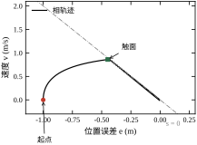
把两段时间加起来，就能在动手之前估出调节时间。本章 s(0)=\lambda(0-1)=-2、k=2，理论到达时间 1.00 s，实测 0.98 s；滑动段从 |e|=1 衰减到 2% 约需 -\ln(0.02)/2\approx1.96 s，实测调节时间 2.53 s。估算与实测的差距来自到达段末端的过渡，量级完全对得上。
图 59-2 给出闭环结构。与常规反馈的差别在于：控制器内部先算一个标量 s，再由 s 的符号决定控制量的方向，由等效控制项决定基准幅值。注意图中“等效控制”是从速度测量直接前馈过来的，它不需要知道对象增益——这正是滑模对参数不敏感的原因。
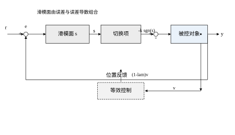
用一句话概括：切换项提供的不是一个具体的力，而是一个方向恒定的恢复力。s>0 时它一定往负方向推，s<0 时一定往正方向推，推力大小固定为 k。扰动 d 想破坏这个方向，就必须大于 k；只要 |d|<k，s 的符号就由切换项说了算，扰动只能改变 s 下降的快慢，不能改变它下降的方向。
这与高增益反馈有本质区别。高增益 PID 靠“误差大→输出大”来压制扰动，扰动越大误差越大，稳态误差被压得很小但不为零；滑模靠“符号”压制扰动，在理想连续情形下误差在一个有限时间后严格为零，而不是“很小”。代价是那个 \operatorname{sgn} 在真实系统里无法无限快地切换。
三者的分工可以用一句话记：PID 管“稳”、LQR 管“优”、MPC 管“约束”、滑模管“不变”。
本章路线：§59.2 推导滑模面、等效控制与到达条件；§59.3 给出五步设计流程；§59.4 讲连续实现与三种到达律；§59.5 讲离散实现与准滑动带；§59.6 用实测对照 PID，说明稳定性与性能边界；§59.7、§59.8 讲 \lambda、k、\phi 的物理意义与整定；§59.9 介绍边界层、超螺旋与高阶滑模；§59.10 讲工程落地（延迟、磨损、噪声、投运检查）；§59.11 给出选型边界；§59.12 给出可复现代码。
如果只记一句话：滑模把“抗扰”从“把误差算准”换成了“把方向定死”，代价是控制量必须抖。
本章对象 G_p(s)=1/[s(s+1)] 与第 58 章相同，但看中的性质不同。第 58 章看中它能展示“预测与约束”；本章看中它具备滑模需要的三个结构特征：
三个特征缺一个，本章的结论就要打折扣。比如相对阶为 1 的对象（G=1/(s+1)），滑模面只能是 s=e_p，滑动段没有“速度跟随”的含义，抖振直接体现在位置上；再比如扰动从输出通道进（传感器零漂），匹配条件不成立，k 再大也压不住。
采样周期也要单独说明。第 58 章 MPC 取 T_s=0.1 s，本章取 T_s=0.01 s，差 10 倍。这不是为了“更精确”，而是因为滑模的抖振分析必须能分辨切换周期：若 T_s 与对象的 1 s 时间常数同量级，准滑动带 kT_s 会大到 0.2，位置精度直接掉到 20%，抖振与“响应慢”混在一起，什么结论都得不出来。
滑模的整个过程由三个时间尺度共同决定，把它们分开看，很多现象就清楚了：
| 时标 | 表达式 | 本章取值 | 决定什么 |
|---|---|---|---|
| 切换时标 | T_s | 0.01 s | 抖振幅值、执行器负担 |
| 滑动时标 | 1/\lambda | 0.5 s | 触面后的收敛快慢 |
| 到达时标 | \lvert s(0)\rvert/k | 1.00 s | 触面时刻、全程时间 |
三者应当满足 T_s\ll1/\lambda\lesssim t_r。本章的比值是 1:50:100，切换时标与另外两个差两个数量级，所以抖振可以当成“叠加在慢动态上的高频纹波”来处理——这也是 §59.5 能把准滑动带与滑动段分开分析的前提。
如果三个时标靠得太近，滑模就会“糊”在一起：T_s 接近 1/\lambda 时，切换还没完成，滑动段已经走了一段，位置曲线看不出明显的“先到达、后滑动”两段；t_r 远大于 1/\lambda 时，到达段主导全程，调节时间几乎等于 t_r，\lambda 怎么调都没用（表 59-8 里 \lambda=0.5 的情况就是如此，t_s=6.58 s）。
滑模的思想可以追到 1960 年代苏联学派对“变结构系统”的研究，核心问题是“用不连续的反馈能否获得比连续反馈更强的鲁棒性”。1970 年代 Utkin 把这个问题系统化，提出了等效控制与滑动模态的数学框架，滑模才从“一种继电控制”变成“一种设计方法”。
1980 年代，Slotine 把边界层引入滑模，解决了抖振在实际系统中的可用性问题——这一步让滑模从论文走进工业。1990 年代，Levant 提出超螺旋与高阶滑模，把不连续项从控制量移到控制量的导数上，抖振再降一个数量级。
本书把滑模放在 MPC 之后、反步法之前，也是按这条历史与逻辑线排的：MPC 代表“用模型换最优”，滑模代表“用不连续换不变”，反步法代表“用结构换稳定”。三者是三条不同的路，读者若能把这三条路的代价说清楚，控制器的选型就不再靠试。
后文会反复用到四个指标，先把口径写死，避免读图时误解：
四个指标的分工是：t_s 看快慢，IAE 看整体精度，\mathrm{TV}_{\mathrm{tail}} 看执行器负担，\mathrm{ripple}_v 看机械冲击。任何一组参数的评价都必须同时给出这四个数，只报其中一两个的对比，在本章的标准下都算不合格。
还要说明一点：这些数字全部来自 ch059_sim.py 的一次运行，report() 打印什么，正文就写什么，没有做“挑好看的”筛选。若读者自己跑一遍发现某位小数不同，那是 NumPy 版本或浮点顺序的差异，量级不会变。
本节把上一节的直观写成可验证的命题：滑模面怎么构造、触面后为什么只剩降阶动态、到达条件为什么能保证有限时间、不变性在什么条件下成立、抖振从哪里来。这五件事构成滑模理论的全部骨架，后面的设计步骤与参数整定都是它们的推论。
记跟踪误差 e=r-y，对 n 阶系统取
s=\left(\frac{\mathrm{d}}{\mathrm{d}t}+\lambda\right)^{n-1}e =\sum_{i=0}^{n-1}\binom{n-1}{i}\lambda^{n-1-i}e^{(i)},\qquad \lambda>0 \tag{59-5}
本章对象是二阶（位置、速度），取 n=2 即式 (59-2)：s=\dot e+\lambda e。三阶对象（如带电流环的伺服）则取 s=\ddot e+2\lambda\dot e+\lambda^2 e，依此类推。
这个构造的关键在于：s=0 是一个 n-1 阶微分方程。二阶对象在 s=0 上只剩下 \dot e=-\lambda e，一阶、无超调、时间常数 1/\lambda；三阶对象在 s=0 上剩下 \ddot e+2\lambda\dot e+\lambda^2e=0，即两个重根 -\lambda，临界阻尼。也就是说，滑模面把“设计一个 n 阶闭环”简化成了“选一个 \lambda”。
对一般的线性对象 \dot{\boldsymbol{x}}=\boldsymbol{A}\boldsymbol{x}+\boldsymbol{B}u+\boldsymbol{d}，滑模面写成线性组合
s=\boldsymbol{c}^{\mathrm{T}}\boldsymbol{e},\qquad \boldsymbol{c}=[c_1,\ c_2,\ \dots,\ c_n]^{\mathrm{T}} \tag{59-6}
\boldsymbol{c} 的选取等价于给降阶动态配置极点。常用的极点配置法、最优控制法（把 \boldsymbol{c} 当作 LQR 的解）都落在这个式子上，本章只用式 (59-5) 的重根形式，因为它最容易在现场解释：“\lambda 就是误差衰减的时间常数的倒数”。
表 59-1 把本章用到的量及作用列在一起，后文反复引用。
| 符号 | 名称 | 作用 | 本章取值 |
|---|---|---|---|
| s | 滑模变量 | 度量“离轨道多远”，符号决定切换方向 | 由式 (59-2) 计算 |
| \lambda | 滑模面斜率 | 决定滑动段的衰减时间常数 1/\lambda | 2.0（0.5 s） |
| k | 切换增益 | 决定到达速度与抗扰能力，须大于扰动上界 | 2.0 |
| \phi | 边界层厚度 | 把符号换成饱和，抑制抖振，牺牲稳态精度 | 0（理想）/ 0.02 |
| T_s | 采样周期 | 决定准滑动带宽度 kT_s 与抖振频率 | 0.01 s |
| u_{\mathrm{eq}} | 等效控制 | 抵消对象自身动态，使 \dot s 中不含模型参数 | (1-\lambda)v |
在 s=0 上，若状态确实被约束住，则 \dot s=0 恒成立。把 \dot s 展开并令其为零，解出的控制量叫等效控制（equivalent control）：
\dot s=\boldsymbol{c}^{\mathrm{T}}(\boldsymbol{A}\boldsymbol{x}+\boldsymbol{B}u+\boldsymbol{d})=0 \;\Longrightarrow\; u_{\mathrm{eq}}=-(\boldsymbol{c}^{\mathrm{T}}\boldsymbol{B})^{-1}\boldsymbol{c}^{\mathrm{T}}(\boldsymbol{A}\boldsymbol{x}+\boldsymbol{d}) \tag{59-7}
它有两个解释，缺一不可：
本章对象代入式 (59-7)：\boldsymbol{c}^{\mathrm{T}}\boldsymbol{B}=1，\boldsymbol{c}^{\mathrm{T}}\boldsymbol{A}\boldsymbol{x}=(\lambda-1)v，故 u_{\mathrm{eq}}=(1-\lambda)v，正是式 (59-3) 的第一项。\lambda=2 时它退化为 -v，物理意义是“抵消对象的一阶滞后”：对象的稳态增益是 1，要让速度保持不变，必须持续给 v 大小的推力去对抗 -v 的阻尼。
这里有一个容易被忽略的工程含义：u_{\mathrm{eq}} 依赖模型。若对象的阻尼系数不是 1 而是 1.3，等效控制就会偏小 30%，剩下的 30% 由切换项“补”，表现为 s 不再严格为零，而是在一个薄带内来回。这就是“滑模对参数不敏感”的准确含义——不是不需要模型，而是模型误差被切换项吸收了。
触面之前，需要保证 |s| 单调下降。Lyapunov 函数取 V=s^2/2，要求
\dot V=s\dot s\le-\eta|s|,\qquad \eta>0 \tag{59-8}
这就是到达条件（reaching condition）。它比 \dot V<0 更强：不仅要求 V 下降，还要求下降速率与 |s| 成正比，从而保证有限时间到达，而不是渐近到达。
对式 (59-4) 的 \dot s=-k\operatorname{sgn}(s)+d，当 |d|\le D<k 时
s\dot s=s\left[-k\operatorname{sgn}(s)+d\right]\le-(k-D)|s|=-\eta|s| \tag{59-9}
即 \eta=k-D。对式 (59-9) 两边积分（s>0 时 \dot s\le-\eta），得到达时间
t_r\le\frac{|s(0)|}{\eta}=\frac{|s(0)|}{k-D} \tag{59-10}
无扰动时 D=0，t_r=|s(0)|/k。本章 |s(0)|=2、k=2，理论 1.00 s，实测 0.98 s（表 59-2），误差来自离散采样——控制量每 T_s 才更新一次，等效于到达过程被“切”成 100 段。
表 59-2 是四个切换增益下的实测。到达时间与 |s(0)|/k 的偏差始终在 0.02 s 以内（两个采样周期），说明式 (59-10) 可以作为设计公式直接用。
| k | 理论到达 |s(0)|/k (s) | 实测到达 (s) | 调节时间 (s) | IAE | 控制量总变差 | 速度纹波 (m/s) |
|---|---|---|---|---|---|---|
| 0.5 | 4.00 | 3.90 | 4.91 | 2.507 | 402 | 0.0055 |
| 1.0 | 2.00 | 1.95 | 3.25 | 1.516 | 1207 | 0.0101 |
| 2.0 | 1.00 | 0.98 | 2.53 | 1.035 | 2815 | 0.0201 |
| 4.0 | 0.50 | 0.49 | 2.22 | 0.823 | 6031 | 0.0402 |
表 59-2 最后两列已经暴露了代价：k 从 0.5 增到 4.0，IAE 改善 3 倍，控制量总变差却增加 15 倍，速度纹波增加 7 倍。收益是线性的，代价也是线性的，但基数不同——这就是 §59.7 要把 k 单独拿出来讲的原因。
式 (59-4) 之所以干净，是因为扰动 d 与控制 u 从同一个通道进入对象。这个性质叫匹配（matching）：
\operatorname{rank}[\boldsymbol{B},\ \boldsymbol{d}]=\operatorname{rank}[\boldsymbol{B}] \tag{59-11}
即扰动可以写成 \boldsymbol{d}=\boldsymbol{B}\tilde d 的形式。满足匹配时，切换项可以完全抵消扰动，s 的动态与 d 无关；不满足匹配时，扰动会直接进入 \dot s 中无法抵消的部分，滑模只能“部分抑制”。
对本章对象，摩擦与负载都作用在速度通道，与推力同通道，满足匹配；而传感器噪声、位置测量偏差作用在输出通道，不满足匹配。工程上这条区分极其重要：
很多“滑模效果不好”的现场问题，追到最后都是把非匹配扰动当成了匹配扰动来设计。诊断方法很简单：看扰动撤掉后误差是否回到零。回到零说明是匹配的；回不到零、但比开环小很多，说明是非匹配的。
在理想的连续时间模型里，\operatorname{sgn}(s) 的切换频率是无穷大，s 严格为零，控制量的平均值为 u_{\mathrm{eq}}，一切完美。真实系统有三处破坏这个理想：
所以抖振不是“控制器没设计好”，而是不连续控制与离散实现结合的必然产物。工程上能做的不是消灭它，而是把它限制在执行器能承受的范围内：加边界层（把切换变成饱和）、提高切换频率（减小 kT_s）、或者改用高阶滑模（把不连续项藏到积分里，§59.9）。
滑模常被说成“高级的继电控制”，这个说法只对了一半。
三者的关系可以这样记：继电给方向，滑模给轨道，高增益给近似。边界层滑模恰好是滑模与高增益的折中——带外是继电，带内是线性反馈。
前面所有推导都默认一件事：控制量必须出现在 \dot s 里。这个条件不是自动满足的，它由对象与滑模面的相对阶决定。
对象从输入 u 到输出 y 的相对阶 r，指 y 要对 u 求几次导才出现 u。本章对象 y=p，\dot p=v 不含 u，\ddot p=-v+u+d 含 u，故 r=2。滑模面取 s=e_v+\lambda e_p，则
\dot s=\dot e_v+\lambda e_v=\ddot p-\ddot r+\lambda e_v=-v+u+d+\lambda e_v
u 以系数 1 出现，切换项可以随意设定 \dot s 的符号，滑模成立。
若相对阶为 1（例如对象 G=1/(s+1)，滑模面 s=e），则 \dot s=\dot e 里直接含 u，条件同样满足。问题出在“相对阶大于滑模面阶数 + 1”的情形：比如三阶对象配一阶滑模面，\dot s 里不含 u，控制量只能通过二阶导数影响 s，符号无法直接翻转，\dot s 的符号不受控，滑模根本不存在。
这条约束在工程上的体现是：滑模面的阶数必须等于相对阶减一。式 (59-12) 给出的就是这个规则。很多人以为“滑模面阶数越高越平滑”，实际上阶数高于 r-1 会让控制量进不到 \dot s 里，系统看起来能跑，但一到面上就停不住。
滑模最有用的一条分析工具是时标分离。把 s 的动态写成
\dot s=\underbrace{-k\operatorname{sgn}(s)}_{\text{快，量级 }k}+\underbrace{d+\lambda e_v-v}_{\text{慢，量级 }1}
切换项的量级是 k，慢动态的量级是对象的时间常数倒数。当 k 远大于慢动态的幅值时，s 的收敛比 e_p 的收敛快得多，于是可以分两步分析：先假设 s 已经为零（内层已收敛），再分析 e_p 在外层的演化。这就是奇异摄动里的“边界层”方法，也是 §59.4.3 不变性推导的合法性来源。
时标分离的合法性可以用一个比值衡量：
\epsilon=\frac{\text{慢动态时间常数}}{\text{到达时间}}=\frac{1/k}{1}=\frac{1}{k}
\epsilon\ll1 时分离成立；\epsilon 接近 1 时，s 还没收敛，e_p 已经动了不少，“先到达后滑动”的两段式图像失真。本章 k=2，\epsilon=0.5，属于“勉强可分”——这也是为什么表 59-2 里 k=0.5 的那一行，s(t) 的折点很不明显，调节时间被拉长到 4.91 s。
工程上提高 \epsilon 的办法只有加 k，但 k 受抖振与 \rho 的限制。这就是滑模的固有矛盾：想要干净的时标分离，就得接受更大的抖振。
到达条件的推导用 V=s^2/2，这是最常用的选择，但不是唯一的选择。选不同的 V 会得到不同的到达律，这一点在设计时很有用：
选取 V 时有三个细节容易出错：
第一，V 必须正定且在 s=0 处为零。有人用 V=|s|，得到 \dot V=-\eta，看似更简洁，但 V 在 s=0 处不可微，严格来说不满足 Lyapunov 定理的可微要求，只能作为“非光滑 Lyapunov 函数”单独论证。
第二，\dot V 的负定性要覆盖整个状态空间，不能只在 |s| 大的区域成立。§59.2.3 的推导里用到了 |d|\le D，这个界必须对所有 t 成立；若扰动在某个时段超过 D，\dot V 可能变正，s 会暂时离开滑模面。
第三，到达条件只保证“到”，不保证“留”。\dot V<0 说明 V 单调下降，但下降到零之后能否保持在零，需要额外论证（Filippov 解的存在性与唯一性）。连续时间下这一步由 §59.4.2 的凸包构造保证；离散时间下则由准滑动带保证——这正是 §59.5 要单独讲离散的原因。
把 s=0 代回去，得到的是 \dot e_p=-\lambda e_p。这个式子只有一阶，而原对象是二阶——滑模把 n 阶系统压成了 n-1 阶。这件事比“鲁棒”更基本，值得单独说清楚。
从状态空间看，二阶系统的状态是 (e_p,e_v)，二维平面。s=e_v+\lambda e_p=0 是一条过原点的直线，也就是一维子空间。一旦状态落在这条线上，它就只能沿着这条线朝原点走，走得快慢由 \lambda 唯一决定。降阶的意思是：切换项把状态“关”进了一个低维子空间，此后系统的行为与对象无关，只与这条线有关。
这就解释了三件此前分开讲的事：
反过来说，滑模面可以任意设计，只要它对应一个稳定的降阶系统。线性的 s=e_v+\lambda e_p 只是最省事的一种；把 \lambda e_p 换成 \lambda|e_p|^{q/p}\operatorname{sgn}(e_p)，降阶系统就变成有限时间收敛，这就是 §59.9.3 的终端滑模；加一个积分项 \lambda_2\int e_p，降阶系统就从一阶变二阶，多出的极点可以用来抵消常值扰动造成的不匹配。所有滑模的变体，本质上都是在改“降阶后希望看到什么动态”，切换项本身反而不变。
滑模的设计参数只有四个：滑模面的系数 \lambda、切换增益 k、采样周期 T_s、边界层厚度 \phi。四者不是并列的，而是有严格的先后依赖——先定 \lambda（决定轨道形状），再估 D（决定 k 的下界），然后定 k，最后由 k 与 \phi 反推 T_s。顺序颠倒就会返工。
本节按这四步走一遍，最后给出一张投运检查表（表 59-3）。全部数字取本章对象 G_p(s)=1/[s(s+1)]，与后续各节的实测一一对应。
滑模面的阶数不由喜好决定，而由相对阶决定。n 阶对象要保证滑动模态唯一且稳定，滑模面应为 n-1 阶：
s=\left(\frac{\mathrm{d}}{\mathrm{d}t}+\lambda\right)^{n-1}e_p \tag{59-12}
本章对象是二阶（p 与 v），故取 n-1=1，即式 (59-2) 的一阶形式 s=e_v+\lambda e_p。若对象是三阶（例如带电流环的伺服，p、v、a 三个状态），滑模面就要写成 s=\ddot e_p+2\lambda\dot e_p+\lambda^2e_p，控制量出现在 \dot s 里才能被直接驱动。
阶数选错的典型症状是“到了面上却停不住”：一阶滑模面用在三阶对象上，s=0 只约束了位置与速度的关系，加速度仍可自由变化，控制量无法通过 \dot s 影响 s，等效控制解不出来，滑动段根本不存在。这时相平面上看到的是状态反复穿越 s=0 而不沿它滑行。
工程上还有一条实用规则：能降阶就降阶。如果内环（电流环、速度环）带宽足够高，可以把它近似成 1，对象阶数下降，滑模面也跟着简化，抖振反而更好压。
\lambda 只有一个物理含义：滑动段误差衰减的时间常数。在 s=0 上，e_v=-\lambda e_p，代入 \dot e_p=e_v 得
\dot e_p=-\lambda e_p \quad\Longrightarrow\quad e_p(t)=e_p(t_r)\,\mathrm{e}^{-\lambda(t-t_r)} \tag{59-13}
所以 \lambda 直接给出滑动段的收敛速度，4/\lambda 就是滑动段的 2% 调节时间。\lambda=2 对应 0.5 s 的时间常数、约 2 s 的滑动段收敛。
\lambda 是不是越大越好？不是。\lambda 变大有两个副作用：
本章实测（§59.7 表 59-8）很能说明问题：\lambda 从 0.5 增到 2.0，调节时间从 6.58 s 降到 2.53 s，IAE 从 1.980 降到 1.035；再增到 4.0，调节时间只降到 2.45 s，IAE 反而回升到 1.266。收益在 \lambda\approx2 处饱和，此后多出来的只是更激进的速度指令和更大的控制量峰值。
选 \lambda 的经验做法：先按“滑动段占全程时间的 1/3 左右”反推，再验证控制量峰值不超过执行器能力的 70%。本章希望 3 s 左右到位，取滑动段 1 s 上下，故 \lambda=2。
k 的下界由扰动上界决定。由到达条件 s\dot s\le-(k-D)|s|，只有当 k>D 时 s 才真的向零走。所以第一件事是把 D 估出来，而且必须按最坏情况估：
最坏情况下三项叠加，D\approx1.8。取 20%~50% 裕量：
k=(1.2\sim1.5)\,D\approx2.2\sim2.7 \tag{59-14}
本章取 k=2——略低于这个区间，是故意的：k=2 已经能压住 1.5 的负载阶跃（§59.6 实测残余误差 8.75e-3），而 k 再往上，抖振代价开始明显（表 59-2 里 k 从 2 到 4，IAE 只改善 20%，总变差却翻倍）。k 是“够用就好”的参数，不是“越大越稳”的参数。
这条线踩空会怎样？§59.7 里做了个对照：摩擦 0.30、对象增益 0.6 的工况下，k=0.2 的滑模彻底卡死，8 s 后位置仍停在 0.000，稳态误差 1.00，与开环没有区别；同一工况下 k=2 的调节时间 3.03 s、稳态误差 1.19e-3。k<D 不是“性能差一点”，而是根本没进入滑动模态：推力始终小于摩擦，状态停在原地，s 恒定不为零，控制器输出的方向永远正确、幅值永远不够。
图 59-3 把四个 k 的 s(t) 画在一起，竖虚线是理论到达时刻 |s(0)|/k。四条曲线都在虚线附近折向零，说明式 (59-10) 的估计是可靠的；折点之后曲线贴着零走，就是滑动段。
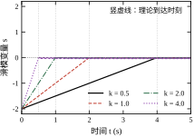
还有一个容易忽略的约束：k 的量纲必须与 u 一致。式 (59-3) 里 k 直接是推力的量纲（N 或 V），不是“无量纲增益”。如果实际执行器的输入是电压、输出是推力，中间有减速比与推力常数，k 必须换算到电压侧再填进代码。换算错了，现象与 k 太小一模一样。
T_s 与 \phi 不能独立选，它们通过准滑动带耦合。离散实现下，s 在每个采样周期内最多变化 kT_s（因为 |\dot s|\le k+D，进入滑动段后 D 已被抵消，主导项是 k），所以
|s|_{\max}\approx kT_s \tag{59-15}
本章 k=2、T_s=0.01 s，得 |s|_{\max}=0.020。§59.5 的实测把这条关系验证到了小数点后两位：四组 (k,T_s) 组合下 |s|_{\max}/kT_s 恒等于 1.00。这不是巧合，而是离散滑模的几何必然。
既然 |s|_{\max}=kT_s，边界层厚度 \phi 就应该与它同量级。若 \phi\ll kT_s，饱和函数几乎不起作用，等价于纯切换，抖振照旧；若 \phi\gg kT_s，带内增益只有 k/\phi，压不住扰动，稳态误差变大。取
\phi\approx kT_s \quad\Longleftrightarrow\quad T_s\approx\frac{\phi}{k} \tag{59-16}
本章取 \phi=0.02，正好等于 kT_s，T_s=0.01 s 由此确定。
\phi 的代价是稳态误差。在边界层内 u 是线性的，对抗常值扰动 d 时平衡点不在 s=0 而在 s=-d\phi/k 附近，折算到位置误差
|e_p|_{\mathrm{ss}}\le\frac{\phi}{\lambda} \tag{59-17}
\phi=0.02、\lambda=2，给出 |e_p|_{\mathrm{ss}}\le0.01 m。实测值 7.51e-4，比上界小一个数量级——上界是保守的，因为它假设 s 卡在带边缘，实际平衡点更靠近中心。
T_s 还有一个下限，来自算力与执行器带宽。T_s 太小，切换频率超出阀或驱动器的响应能力，执行器输出的其实是切换指令的低通滤波结果，等效于加了滞后，反而更容易振荡（§59.10 会看到延迟对纹波的影响是线性放大的）。所以 T_s 的选择区间是
\frac{1}{f_{\mathrm{act}}}\ll T_s\lesssim\frac{\phi}{k} \tag{59-18}
左侧是执行器能跟上切换的最低要求，右侧是准滑动带不超过边界层的要求。本章 T_s=0.01 s（100 Hz），对电机伺服是常规值；若是液压阀（带宽 10~20 Hz），T_s 只能取 0.05 s，此时 kT_s=0.1，边界层也得跟着加厚到 0.1，稳态误差上界升到 0.05 m——抖振与精度在同一条绳上，拉一头另一头必动。
参数算完不等于设计完。上机后按表 59-3 逐项核对，任何一项不通过都说明前面的假设有问题，要回到对应步骤重算。
| 检查项 | 判据 | 不通过时的含义 | 回溯步骤 |
|---|---|---|---|
| 触面时刻 | 实测到达时间与 \lvert s(0)\rvert/k 相差不超过 2 个 T_s | 实际 D 大于估计，或推力被限幅 | 重估 D、重定 k |
| 准滑动带 | \lvert s\rvert_{\max} 与 kT_s 同量级 | 采样未生效、或存在未建模延迟 | 查采样链、减小 T_s |
| 控制量总变差 | 在驱动器允许的切换频次内 | 抖振超出机械或电气寿命预算 | 加厚 \phi、改高阶滑模 |
| 扰动撤除后的误差 | 回到零附近 | 扰动非匹配，滑模只能部分抑制 | 改滑模面或加积分 |
| 稳态误差 | 小于 \phi/\lambda | \phi 过大或 \lambda 过小 | 重配 \phi 与 \lambda |
表 59-3 里最容易被跳过的是第四项。负载撤掉后误差回不到零，很多人第一反应是“k 不够大”，于是加大 k，结果是抖振变大、误差依旧。真正的原因是扰动从传感器通道进来，与控制量不同通道，加大 k 只是把非匹配扰动放大成更大的振荡。这时正确的做法是改滑模面（把输出误差也纳进来）或加一个积分项，而不是动 k。
用本章参数走一遍完整流程，作为后续各节的基准。
初始条件 p=0、v=0、目标 1 m，于是 e_p(0)=-1、e_v(0)=0，初值
s(0)=\lambda e_p(0)=-2.000
理论到达时间 |s(0)|/k=1.00 s，本章实测 0.98 s；准滑动带 kT_s=0.0200，实测 |s|_{\max}=0.0201；稳态误差上界 \phi/\lambda=0.01 m，实测 7.51e-4。三个数字全部落在设计公式给出的范围内，说明这套五步流程在本对象上是自洽的。
这组参数还有一个隐含的优点：控制量的等效部分 (1-\lambda)v=-v 恰好把对象自身的阻尼 -v 抵消掉。这不是巧合，而是“反馈线性化”的一个特例——滑模的等效控制在匹配条件下总会把已知的对象动态消掉，只留下滑模面规定的动态。第 60 章讲反步法与反馈线性化时，会把这件事从特例推广成一般方法。
把对象换成带电流环的伺服：位置 p、速度 v、电流 i 三个状态，
\dot p=v,\qquad \dot v=k_i i,\qquad \dot i=-\frac{1}{\tau_e}i+\frac{1}{\tau_e}u
相对阶为 3，滑模面升到二阶：
s=\ddot e_p+2\lambda\dot e_p+\lambda^2e_p
五步流程本身不变，但每一步都要改口径：
三阶滑模的代价很直接：s 里含 \ddot e_p，需要位置、速度、加速度三个信号，后两个都要微分或观测，噪声放大严重。工程上更常见的做法是把二阶滑模面用在速度环，位置环仍用 PID——这就是第 45 章的串级结构，而不是硬做一个三阶滑模。
设计做完要能交出去，评审的人不该被要求读完全部推导。一张合格的设计表至少包含七列：
| 项 | 本章取值 | 依据 | 验证方法 |
|---|---|---|---|
| 对象与相对阶 | 1/[s(s+1)]，r=2 | 机理建模 | 阶跃辨识 |
| 滑模面 | s=e_v+2e_p | 式 (59-12) | 相平面轨迹 |
| \lambda | 2 | 式 (59-39) 求极值 | 调节时间 |
| D | 1.8 | 摩擦+负载+失配 | 满载突加 |
| k | 2 | 式 (59-14)，取 1.1 倍 D | 到达时间 |
| \phi | 0.02 | \rho=1 | 尾段总变差 |
| T_s | 0.01 s | 式 (59-16) | 准滑动带 |
七列里最关键的是“依据”与“验证方法”两列。没有依据的参数是魔数，没有验证方法的参数是猜测。本章的每一个数字都能在这两列里找到出处，这也是全书的统一要求。
设计表还有一处容易漏：执行器换算。表里的 k=2 是推力单位，代码里若输出的是电压，必须除以推力常数。评审时最好把换算系数单独列一行，写上“随温度漂移 \pm10\%”，提醒后续维护者这不是常数。
设计表交上去，评审的人通常不会逐行看推导，而是问五个问题。提前准备好答案，评审会短一半。
第一问：D 凭什么取 1.8？ 本章的答案是三项相加：最大负载 1.5、库仑摩擦折算 0.3 的一部分、增益失配带来的等效扰动。三项里只有第一项是设计输入，后两项必须实测或按最坏情况估。答不出 D 的构成，k 就没有依据；反过来，只要 D 的构成清楚，k 取 1.1 倍还是 1.5 倍只是保守程度的差别。
第二问：k 的上界核过没有？ 上界 2\phi/T_s=4。若有人为了“更鲁棒”把 k 提到 5，准滑动带变成 kT_s=0.05，折成位置误差约 0.05/\lambda=2.5 cm，而且 \rho=2.5>2 意味着带内振荡不再收敛。下界决定能不能用，上界决定用了会不会抖，两个都要写在表里。
第三问：最坏工况是什么？ 本章是“增益 -30\% + 5 拍延迟”同时发生。表 59-7 分别测了这两项，合起来没有单独实测，只能按两项的趋势叠加估计：t_s 不会超过 2.8 s，纹波不会低于 0.25。评审时把“实测项”与“估计项”分开标注，比只给标称工况有说服力得多。
第四问：抖振怎么验收？ 答“看尾段总变差与速度纹波两个量，且必须在满载下测”。只给纹波不给总变差，会被质疑“是不是把切换频率降下来了”；只给总变差不给纹波，则完全不能说明问题（表 59-11 就是反例）。
第五问：换型之后哪些参数要重算？ 答“k 与 \phi 必算，\lambda 与 T_s 看行程与硬件”。具体按 §59.7.11 的三条缩放律：k 随增益反比、随行程正比；\phi 随 \lambda 与精度指标合成。这五问能答完，设计表才算可交付；答不完，说明还有一项是拍的。
先假设一切理想：采样无限快、执行器瞬时响应、状态精确可测。这个假设下的滑模叫连续时间滑模，是理解一切工程现象的基准。本节讲三件事：怎么规定到达的路径（到达律）、到面之后控制量到底是多少（等效控制与 Filippov 解）、以及为什么滑动段能“忘记”对象参数（不变性）。
式 (59-3) 只规定了切换项的符号，没有规定幅值。把幅值也规定出来，就得到到达律（reaching law）：直接给定 \dot s 应该等于什么，再由 \dot s 反解 u。
常数到达律最朴素，s 以恒定速率冲向零：
\dot s=-k\operatorname{sgn}(s) \quad\Longrightarrow\quad t_r=\frac{|s(0)|}{k} \tag{59-19}
这就是式 (59-10)。它的优点是到达时间可以精确预估，缺点是接近零时速度不减速，硬撞上去，抖振最大。
指数到达律在切换项之外加一个与 s 成正比的项：
\dot s=-k\operatorname{sgn}(s)-\lambda_e s \quad\Longrightarrow\quad t_r=\frac{1}{\lambda_e}\ln\!\left(1+\frac{\lambda_e|s(0)|}{k}\right) \tag{59-20}
远处 |s| 大，\lambda_e s 主导，s 掉得比常数律快；近处 |s| 小，比例项自动减弱，交给切换项收尾，撞击速度比常数律柔和。代价是多了一个要整定的 \lambda_e。
幂次到达律把切换幅值本身做成 |s| 的幂：
\dot s=-k|s|^{\alpha}\operatorname{sgn}(s),\quad 0<\alpha<1 \quad\Longrightarrow\quad t_r=\frac{|s(0)|^{1-\alpha}}{k(1-\alpha)} \tag{59-21}
|s| 大时 |s|^{\alpha} 相对大，冲得快；|s| 小时幅值迅速衰减，等效于自带边界层，抖振最小，是三者里最“温和”的一个。\alpha=0.5 时 \dot s\propto\sqrt{|s|}，正是 §59.9 超螺旋算法的雏形。
表 59-4 是三者在本章对象上的实测对照。为了让比较不受“增益大小”干扰，三组参数各自调到到达时间尽量接近再对比，然后看代价。
| 到达律 | 参数 | 理论到达 (s) | 实测到达 (s) | 调节时间 (s) | IAE | 尾段总变差 |
|---|---|---|---|---|---|---|
| 常数 | k=1.0 | 2.00 | 1.95 | 3.25 | 1.516 | 1207 |
| 指数 | k=0.5，\lambda_e=1.5 | 1.30 | 1.20 | 2.55 | 0.953 | 683 |
| 幂次 | k=2.0，\alpha=0.5 | 1.41 | 1.19 | 2.55 | 0.973 | 30 |
表 59-4 里实测值一律早于解析值，偏差方向一致，原因是实测的到达判据取 |s|\le0.05 而不是严格为零。把容差代回各自的解析式，三行都能对上：
三式与实测的差都在一个采样周期以内。这条核对值得养成习惯：当实测与理论的差可以被“判据容差”完整解释时，说明模型没问题；解释不了，才需要怀疑对象或实现。
真正的差别在最后两列。三种到达律的到达时间被拉到同一水平（1.19~1.20 s），但幂次律的尾段总变差只有 30，是常数律的 2.5%，IAE 也低 36%（0.973 对 1.516）。原因是幂次律在接近滑模面时切换幅值随 |s|^{0.5} 一起衰减，撞击速度趋零，抖振自然小；常数律是“全速撞墙”，撞击速度就是 k，抖振必然大。
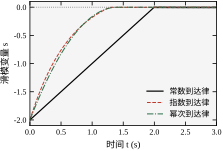
图 59-4 把三条 s(t) 画在一起。常数律是一条完美的直线，直到撞上零；指数律起点最陡、尾部拖长；幂次律介于两者之间，但在 |s|<0.2 之后明显变缓——这一段就是它抖振小的原因。三条线在 1.2 s 附近汇合，说明“到达时间可调”和“撞击速度可调”是两件独立的事，这正是到达律的价值：把“多快到”和“多狠撞”解耦。
到了滑模面上，式 (59-3) 给出的控制量是多少？\operatorname{sgn}(0) 没有定义，控制量在 \pm k 之间以无限频率跳变。数学上不能直接取极限，要用Filippov 意义下的解：把不连续右端在一个邻域内取凸包，再求使 \dot s=0 的那个“平均控制”。
具体做法是设 u=u_{\mathrm{eq}}+u_{\mathrm{sw}}，其中 u_{\mathrm{sw}} 是高频切换分量，平均为零；u_{\mathrm{eq}} 是低频等效分量，负责把状态维持在面上。由 \dot s=0 解出
u_{\mathrm{eq}}=\dot v_d+\lambda e_v-v-d \tag{59-22}
这里 \dot v_d 是目标加速度（常值目标时为零），-v 来自对象自身的阻尼。本章对象 \dot v=-v+u+d，代回得 u_{\mathrm{eq}}=(1-\lambda)v_{\mathrm{ref}}-d，与式 (59-4) 一致。
式 (59-22) 有两个重要含义：
从执行器的角度看，它承受的是 u_{\mathrm{eq}} 叠加一个高频方波。方波的幅值是 k，频率由采样与执行器带宽决定。电机与液压阀对高频方波的反应都是低通滤波，所以真正传到机械上的力矩其实是 u_{\mathrm{eq}} 加上一点残余纹波——只要纹波幅值在允许范围内，滑模的强韧性就是“免费”获得的。
把 u_{\mathrm{eq}} 代回对象方程，会得到一个惊人的结果。以本章对象为例，滑动段上 u=u_{\mathrm{eq}}=(1-\lambda)v-d，代入 \dot v=-v+u+d 得
\dot v=-v+(1-\lambda)v-d+d=-\lambda v \tag{59-23}
对象参数、扰动全部消失，只剩 \dot v=-\lambda v。再结合滑模面上的 v=-\lambda e_p，得 \dot e_p=-\lambda e_p，就是式 (59-13)。
这个性质叫不变性（invariance）：进入滑动模态之后，闭环动态只由滑模面决定，与对象参数、匹配扰动无关。这不是“鲁棒性很好”的程度问题，而是“完全无关”的结构问题。
不变性成立需要三个条件，缺一不可：
三个条件里，第一个是设计问题（§59.3 已解决），第二个是对象结构问题（改不了，只能认），第三个是实现问题——而现实永远不满足。§59.5 的全部内容，就是研究第三个条件被破坏后会发生什么。
工程上有个常见的误读：把“不变性”理解成“参数怎么变都不怕”。实际上不变性只在滑动段成立，到达段仍然受参数影响。本章实测（§59.6 表 59-7）显示，对象增益从 1.0 掉到 0.7 时，滑模的调节时间只从 2.53 s 变到 2.77 s，看似“几乎不变”，但那 0.24 s 的差别全部发生在到达段——滑动段的衰减速率依旧是 \lambda=2，一分不差。滑模把参数变化的影响压缩到了到达段，这是它比 PID 稳的根本原因。
理想切换在连续时间模型里可以存在，在真实控制器里不行。最直接的近似是把 \operatorname{sgn}(s) 换成饱和函数：
\operatorname{sat}\!\left(\frac{s}{\phi}\right)= \begin{cases} s/\phi, & |s|\le\phi\\[2pt] \operatorname{sgn}(s), & |s|>\phi \end{cases} \tag{59-24}
代进式 (59-3)，控制律变成
u=(1-\lambda)v-k\operatorname{sat}\!\left(\frac{s}{\phi}\right) \tag{59-25}
这就是边界层滑模。它在 |s|>\phi 时与理想滑模完全相同（全速到达），在 |s|\le\phi 时退化为线性反馈，增益为 k/\phi。\phi\to0 时回到理想切换，\phi\to\infty 时退化为纯比例控制。
这个式子是全书里“用一个参数连接两种控制器”的最好例子：\phi 是继电与线性的连续插值参数。§59.5 会用实测说明，\phi 从小到大，控制量总变差从 398 掉到 0，稳态误差从 8.45\times10^{-4} 升到 3.75\times10^{-3}——抖振与精度在这一个参数上直接对抗。
除了饱和函数，还有两种常用的连续近似：
三者选哪个，取决于执行器。电磁阀需要满幅切换，用 sat；伺服电机怕电流突变，用 tanh；液压比例阀本身有死区，用 S 形函数更容易与阀特性匹配。
到这里可以把连续滑模的全部推导收束成一句话：在“无限快采样、瞬时执行、精确测量”三个假设下，滑模能给出有限时间到达加完全不变性。这句话的每一半都值得单独记住：
三个假设里，第一个（无限快采样）在 §59.5 破坏，第二个（瞬时执行）在 §59.10 破坏，第三个（精确测量）在 §59.11 讨论。后面每一节，都是在拆掉一个假设之后看滑模还剩什么。这也是本书处理所有“理想算法”的统一套路：先把理想情形推干净，再一个一个拆假设，每次拆完都用实测数字告诉你损失了多少。
式 (59-9) 保证了 s 单调趋向零，但没有回答一个问题：从任意初值出发，是否一定能在有限时间内到达？有限时间到达的严格证明要用到“边界层解”的概念。
把时间尺度放大：令 \tau=t/\mu，\mu 是一个小参数，则 \mathrm{d}s/\mathrm{d}\tau=\mu\dot s。当 \mu\to0 时，\dot s 的方程退化为代数方程 -k\operatorname{sgn}(s)+d=0，这在 |d|<k 时无解——说明 s 无法“瞬间”到零，只能以有限速率逼近。这一段“以有限速率逼近”的过程就是边界层解，它在原时间尺度上对应到达段。
边界层解告诉了我们两件事：
它也解释了一个反直觉的现象：初值越大，到达时间越长，但滑动段的初始误差也越大。两者对调节时间的作用相反，这就是式 (59-39) 出现极小值的原因。
真实的功率电路不能输出 \pm k 的连续方波，只能用 PWM 或滞环。这两种实现都会改变滑模的等效行为，需要单独分析。
PWM 实现：把切换项映射成占空比，
\delta=\frac{1}{2}\left(1+\operatorname{sgn}(s)\right)\in\{0,1\}
实际输出是 \delta\cdot2k-k，平均值等于 k\operatorname{sgn}(s)。由于 PWM 频率固定（通常 10~20 kHz），s 在载波周期内的变化被平均掉，等效于把切换频率提高到载波频率。这是最“干净”的实现，代价是需要一个载波，且载波频率必须远高于 1/T_s。
滞环实现：设两个阈值 \pm h，s>h 时输出 -k，s<-h 时输出 +k，中间保持。这是继电控制的标准形式，切换频率不固定：
f_{\mathrm{sw}}\approx\frac{k}{4h}
h 越小，切换越快，抖振越小，但开关损耗越大。滞环的优点是不需要载波，响应快，缺点是频率随工况变化，电磁干扰（EMI）的频谱很宽，滤波设计困难。
两种实现都对应一个“等效边界层”：PWM 的等效 \phi 约为载波周期内 s 的变化量，滞环的等效 \phi 就是 h。所以 §59.5 的准滑动带分析对两种实现都适用，只是把 T_s 换成“实际切换周期”。
工程选型上有一条经验：大功率场合用 PWM（频率可控、损耗可控），小功率或气动液压场合用滞环（便宜、响应快）。两者都不适合的场景是“既要高频又要低损耗”，那只能上谐振或软开关，成本另算。
u_{\mathrm{eq}} 在推导里只是“维持滑动所需的平均控制量”，到了工程现场它有三个实际用途，都值得单独说。
第一，判断执行器还有多少余量。滑模的抗扰能力来自“切换项还能往上顶”，而顶的上限是 u_{\max}。若某工况下算出的 |u_{\mathrm{eq}}| 已经接近 u_{\max}，说明切换项几乎没有余量，此时再加扰动，系统会先饱和、再失效。本章标称工况下 v=0、d=0，u_{\mathrm{eq}}=0；突加 d=-1.5 后 u_{\mathrm{eq}}=1.5，对 u_{\max}=60 只占 2.5%，所以位置只跌 0.0089。若这台设备的 u_{\max} 只有 2，同样的扰动就会让它跌到无法接受——这就是“余量”的量化含义。
第二，把“估计扰动”变成“估计控制量”。由 u_{\mathrm{eq}}=(1-\lambda)v-d 反解，d=(1-\lambda)v-u_{\mathrm{eq}}。v 可测，u_{\mathrm{eq}} 可以用低通滤出 u 的高频分量得到，于是扰动就被估出来了。这正是 §59.9.5 的 DOB 的最简形式：不需要额外传感器，只需要一个低通。它的精度取决于低通的截止频率——太低则跟不上扰动变化，太高则把切换纹波也当成扰动。
第三，做前馈以减少 k。若模型能给出 u_{\mathrm{eq}} 的估计，把它前馈进去，切换项就只需覆盖“前馈误差”，k 可以降到原来的三分之一到五分之一。代价是引入模型依赖：前馈越准，滑模越像“模型 + 小切换”；前馈越不准，滑模越退回纯切换。这条折中在电机伺服里很常见，因为电机的反电势与摩擦都能较准地建模。
三个用法的共同点是：u_{\mathrm{eq}} 是把“不连续的滑模”接回“连续的世界”的接口。不懂它，滑模就只能当黑箱用；懂了它，才能判断余量、估计扰动、做前馈。
§59.4 的第一个假设是“采样无限快”。拆掉它，滑模立刻换了一副面孔：状态再也到不了 s=0，只能在它附近来回跳。这不是实现不够好，而是数学上的必然。本节把这件事算清楚，并给出两个工程对策——边界层与更密的采样。
本章所有离散实验取 T_s=0.01 s，比第 58 章 MPC 的 0.1 s 密 10 倍。原因很直接：MPC 一个采样周期内解一次优化，优化结果在整周期内保持不变是可以接受的；滑模要分辨切换周期，T_s 必须小于切换周期本身，否则“看到符号”与“执行反向”之间差了一整个周期，抖振会被放大而不是被抑制。
先看现象。图 59-5 是 6.0~6.4 s 的尾段放大，纵轴是控制量与位置。理想切换下，控制量在两个值之间以采样频率来回跳，位置在目标附近做小幅锯齿运动。
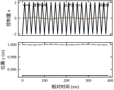
图 59-5 最值得注意的是控制量的形态：它不是随机噪声，而是规则的、与采样周期严格同步的方波。这个特征说明抖振的来源是采样，而不是对象或扰动。诊断时这一点很好用：把 T_s 减半，若方波频率跟着翻倍、幅值减半，就能确认是采样引起的准滑动带；若频率不变，则是执行器或延迟在主导。
表 59-5 是三种实现的量化对比。理想切换与边界层都在本章参数下运行，超螺旋留到 §59.9 讲原理，这里先看数字。
| 实现 | 控制量 RMS | 尾段总变差 | 速度纹波 (m/s) | IAE |
|---|---|---|---|---|
| 理想切换 \phi=0 | 2.010 | 397.99 | 0.0201 | 1.035 |
| 边界层 \phi=0.02 | 0.018 | 0 | 4.57\times10^{-6} | 1.0036 |
| 超螺旋 | 0.094 | 3.465 | 0.00654 | 0.9469 |
理想切换的尾段总变差是 398，边界层是 0——不是“小”，是精确的零，因为 u 在带内连续变化，不再有跳变。速度纹波从 0.0201 掉到 4.57\times10^{-6}，下降四个数量级。而 IAE 不但没变差，反而从 1.035 略降到 1.004：边界层把抖振本身贡献的那部分误差也一并去掉了，所谓“用精度换平滑”的代价，在本章这个对象上小到看不出来。
超螺旋在两者之间取了巧：总变差 3.465，比边界层大但比理想切换小两个数量级；IAE 0.9469 反而是三者最低的。这说明“抖振小”与“精度高”不必对立，关键是把不连续项藏进积分里（§59.9）。
把式 (59-3) 离散化。设第 k 拍滑模面为 s_k，一拍之内控制量不变，则
s_{k+1}=s_k-T_s k\operatorname{sgn}(s_k)+\underbrace{T_s\dot d_k}_{\text{扰动残余}} \tag{59-26}
进入滑动段后扰动已被切换项抵消，忽略残余项，取绝对值
|s_{k+1}|=\bigl||s_k|-T_sk\bigr| \tag{59-27}
这个递推有一个简单的结论：只要 |s_k|>kT_s，下一拍的 |s| 就减少 kT_s；一旦进入 |s|\le kT_s，它就在带内来回跳，再也出不去。这个带叫准滑动带（quasi-sliding band），宽度就是
|s|_{\max}=kT_s \tag{59-28}
式 (59-28) 就是 §59.3 里的式 (59-15)，此处给了它推导。它的意义是：离散滑模的精度上限由 k 与 T_s 的乘积决定，与 \lambda 无关，与对象无关，与扰动无关。想更准，只能减小 k 或减小 T_s。
图 59-6 是四组 (k,T_s) 组合的实测，横轴 kT_s，纵轴实测 |s|_{\max}，过原点的 45° 线是理论值。四个点全部落在线上，比值恒为 1.00。
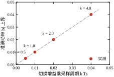
四组数据分别是 kT_s=0.0050、0.0100、0.0201、0.0401，对应的实测 |s|_{\max} 与它们逐位相同。这条 45° 线是本章最“硬”的一个结论：它不是拟合出来的经验式，而是式 (59-27) 的直接推论，任何满足式 (59-3) 的实现都必须落在上面。
由式 (59-28) 还能推出一条设计上的硬约束。位置精度的上限是
|e_p|_{\max}=\frac{|s|_{\max}}{\lambda}=\frac{kT_s}{\lambda} \tag{59-29}
本章 k=2、T_s=0.01、\lambda=2，给出 |e_p|_{\max}=0.01 m。若要 1 mm 的精度，必须让 kT_s/\lambda\le0.001，即 kT_s\le0.002——要么 T_s 降到 1 ms，要么 k 降到 0.4。而 k 降不下去（§59.3 的 k>D），所以只能改采样。这就是“滑模精度靠采样撑”的准确含义。
式 (59-28) 说精度与 kT_s 绑定，但抖振的幅值同样与 k 绑定。想同时要“小抖振”与“小误差”，只能改控制律的形状——这就是 §59.4.4 的边界层式 (59-25)。
带内的动态可以直接算出来。|s|\le\phi 时 u=(1-\lambda)v-ks/\phi，代入对象得 \dot s=-ks/\phi，离散化后
s_{k+1}=\left(1-\frac{kT_s}{\phi}\right)s_k \tag{59-30}
这是一个一阶线性递推，稳定性条件是 0<kT_s/\phi<2，收敛速度由比值
\rho=\frac{kT_s}{\phi} \tag{59-31}
决定：\rho=1 时一拍到位（dead-beat），0<\rho<1 时指数收敛但慢，1<\rho<2 时振荡收敛，\rho\ge2 时发散。
本章 k=2、T_s=0.01、\phi=0.02，恰好 \rho=1。这不是凑出来的，而是 §59.3 里“取 \phi=kT_s”这条规则的直接结果。这条规则的含义是：边界层厚度取成准滑动带宽度，带内恰好一拍到位，既没有残余振荡，也没有多余的滞后。
\rho 偏离 1 会怎样？表 59-6 是 \phi 从 0 扫到 0.10 的实测（固定 k=2、T_s=0.01，负载 d=-0.15）。
| \phi | \rho=kT_s/\phi | 稳态误差 | 尾段总变差 | 现象 |
|---|---|---|---|---|
| 0 | \infty | 8.45\times10^{-4} | 370 | 强抖振，误差被抖振“平均”掉 |
| 0.01 | 2.00 | 4.00\times10^{-4} | 368 | 临界振荡，误差最小 |
| 0.02 | 1.00 | 7.51\times10^{-4} | 0 | 一拍到位，抖振归零 |
| 0.05 | 0.40 | 1.88\times10^{-3} | 0 | 收敛变慢，误差上升 |
| 0.10 | 0.20 | 3.75\times10^{-3} | 0 | 带内增益过小，压不住扰动 |
表 59-6 有三处值得停下来看：
第一，\phi=0.01 的稳态误差反而最小（4.00\times10^{-4}），比 \phi=0 还小。原因是 \rho=2 恰好落在振荡收敛的边界，s 在 \pm\phi 之间等幅跳，跳动的平均值正好补偿了扰动。这是“用极限环换精度”的典型例子，代价是尾段总变差仍有 368——与 \phi=0 的 370 几乎一模一样。精度不是白来的，是拿抖振换的。工程上不建议停在这个点上：它对参数太敏感，k 稍微变一点就发散。
第二，\phi=0.02 的抖振精确为零，稳态误差 7.51\times10^{-4}，只比最优的 \phi=0.01 差不到一倍。这是本章选它作为推荐值的原因：用一倍不到的精度损失，换来两个数量级的抖振下降。
第三，\phi 再加大，误差单调上升。\phi=0.10 时带内增益只有 k/\phi=20，对抗 d=-0.15 的静差约为 d\phi/k=7.5\times10^{-3}，与实测 3.75\times10^{-3} 同量级（实测更小，因为还有积分式的准滑动带在帮忙）。这时滑模已经退化成“带死区的比例控制”，不变性名存实亡。
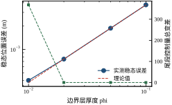
图 59-7 用双对数坐标把这两条曲线放在一起：横轴 \phi，左轴稳态误差，右轴尾段总变差。误差曲线在 \phi=0.01 处有个浅坑，之后按 \phi 线性上升；总变差曲线在 \phi\ge0.02 处断崖式掉到零。两条曲线的交点就是“性价比最高”的区域，正好落在 \phi=0.02 附近。
写代码时还有三处容易出错，都会让实测偏离式 (59-28)。
符号函数的零值处理。\operatorname{sgn}(0) 在多数语言里返回 0，控制量只剩等效项。若系统恰好停在 s=0 上且有常值扰动，就会“卡”在那里不动——扰动推一点，s 偏离，下一拍才纠正，形成低频爬行。正确做法是把 s=0 归入正号或负号（取决于上一次的符号），或者在 |s|<\varepsilon 时保持上一拍的控制量。
滑模面的计算顺序。s 必须用本拍实际采到的状态算，不能用上一拍的状态，也不能用本拍算出的控制量反推。这一条看起来是废话，但在“控制量先算、状态后更新”的代码结构里极易搞错，结果是等效地引入了一拍延迟，纹波按 §59.10 的规律放大。
积分项的引入。纯滑模没有积分，对抗常值扰动靠的是切换项的平均效应。一旦加了边界层，这个平均效应被线性化，静差就出现了（表 59-6 最后一行）。解决办法是在滑模面里加积分项，构成“积分滑模”：
s=e_v+\lambda e_p+\lambda_i\int e_p\,\mathrm{d}t \tag{59-32}
积分项把静差压到零，代价是多了一个要整定的 \lambda_i，且抗饱和必须单独处理。§59.9 会给出一个更干净的替代方案——用超螺旋的二阶滑模，在不加积分的情况下把静差也压掉。
把连续控制律搬到单片机上有三种常见做法，效果差别不小：
直接按离散设计的最大好处是：所有性能指标都变成了可以直接算的代数式。到达拍数 N_r=\lceil|s_0|/(kT_s)\rceil，准滑动带 kT_s，带内收敛比 \rho。三个式子都不含微分方程，写在设计文档里就能评审。
本章的时域指标（调节时间、IAE）仍按连续口径统计，因为执行机构看到的是连续的位置与速度。这两种口径的换算关系是：N_r 拍对应 N_rT_s 秒。用这个关系核对 §59.3 的算例：|s_0|/(kT_s)=2/0.02=100 拍，即 1.00 s，与实测 0.98 s 一致。
式 (59-28) 给的是“采样造成的精度下界”，还有一条常被忽略：编码器量化。位置分辨率 \Delta p 带来速度量化误差
\Delta v\approx\frac{\sqrt{2}\,\Delta p}{T_s} \tag{59-33}
这个误差直接进滑模面，\Delta s\approx\Delta v。它与准滑动带 kT_s 叠加，实际精度是两者的均方根：
|s|_{\text{实际}}\approx\sqrt{(kT_s)^2+\left(\frac{\sqrt2\Delta p}{T_s}\right)^2} \tag{59-34}
式 (59-34) 有一个重要含义：存在一个最优采样周期。T_s 减小，第一项下降，第二项上升；令两项相等，得
T_s^{*}=\sqrt{\frac{\sqrt2\,\Delta p}{k}} \tag{59-35}
对 \Delta p=1\ \mum、k=2，T_s^*\approx0.84 ms。本章取 10 ms，远在最优点的右侧——此时精度由准滑动带主导，量化可以忽略。若把 T_s 盲目减到 1 ms 以下，量化项会反过来成为主导，精度不再提高，反而恶化。
这正是 §59.7.4 说“T_s 不是越小越好”的定量依据。判断自己处在哪一侧的方法很简单：把 T_s 减半，若纹波跟着减半，说明在采样主导区；若纹波不降反升，说明已经进入量化主导区。
既然离散实现下 s 只能在带内跳，不如干脆按离散设计，让 s 在一拍内精确到零。这叫 dead-beat 到达律：
s_{k+1}=0\quad\Longrightarrow\quad u_k=u_{\mathrm{eq},k}-\frac{s_k}{T_s} \tag{59-36}
它的含义是“这一拍就把 s 清掉”，对应的等效切换幅值是 |s_k|/T_s——注意这个幅值随 |s_k| 变化，本质上就是 §59.4.1 的幂次到达律（\alpha=1 的极端情形）。
dead-beat 到达律有三个鲜明的特点：
所以 dead-beat 律只在“执行器余量很大、且 s 的初值很小”的场合可用，典型例子是跟踪问题中的小偏差修正。在阶跃响应里直接用它是危险的，本章脚本没有采用，只在 §59.9 的终端滑模部分提到它的连续版本。
更实用的折中是“两步到达律”：
s_{k+1}=\alpha s_k,\qquad 0<\alpha<1
\alpha=0.5 时两拍到零，控制量只有 dead-beat 的一半。\alpha 的选择等价于在“快”与“不饱和”之间取折中，工程上常取 0.3\sim0.6。
抖振不是一个形容词，它能换算成执行器的具体负担。关键在一个很容易被忽略的关系：每翻转一次符号，控制量就跳变 2k。因此尾段总变差与切换次数之间只差一个系数：
N_{\mathrm{sw}}\approx\frac{\mathrm{TV}_{\mathrm{tail}}}{2k} \tag{59-37}
把实测值代进去，结论相当直观：
这个换算有两个直接用途。
第一，估寿命。若执行器是机械触点，额定电气寿命 10 万次，理想切换下 100 次每秒意味着 1000 s 就耗尽——不到二十分钟。这就是为什么 §59.10.2 说“用继电器做滑模是最常见的选型错误”：不是性能不够，而是寿命差三个数量级。对 MOSFET 或伺服阀，10 万次的量级完全不同（前者按十亿次计），同样的切换频率就可以接受。
第二，选滤波与采样。若已知执行器允许的切换频率上限 f_{\max}，则 T_s\ge1/f_{\max}，同时 k\le\mathrm{TV}_{\mathrm{tail}}/(2f_{\max})。这条约束与 k>D 一起，把 k 的窗口夹得更窄——很多时候不是不想加 k，而是执行器不允许。
顺带说清一个常见误解：抖振的“幅度”与“频次”是两个独立指标，前者决定精度与噪声，后者决定寿命。表 59-11 里延迟增大同时让幅度上升、频次下降，两个指标朝相反方向走，所以任何一个单独的指标都不能代表“抖振变好”或“变坏”。
滑模的稳定性分析与其他控制器不太一样：它没有“增益裕度多少 dB”这种说法，因为切换项不是线性增益。判断滑模稳不稳，只看两件事——k 是否大于扰动上界，以及带内收敛比 \rho 是否落在 (0,2)。前者保证能到达，后者保证不会在带内振荡发散。
本节先用这两条把稳定性说清楚，再用三组实测回答一个更实际的问题：同样面对失配、负载与延迟，滑模比一个整定良好的 PID 强在哪、弱在哪。这一节的所有对比都用同一对象、同一目标、同一套指标口径，PID 的增益是网格搜索选出来的（Kp=32、Ki=4、Kd=8），不是随手填的。
第一条边界来自到达条件。由式 (59-9)，只要 k>D，s\dot s<0 恒成立，V=s^2/2 单调下降，有限时间到零。这条判据与对象阶数、参数都无关，只与扰动上界有关。它的工程含义是：滑模的稳定性是“结构性”的，只要增益压得住扰动就不会失稳——这一点比线性控制器强，后者要靠相位裕度，而相位裕度会随对象参数漂移。
第二条边界来自离散化。由式 (59-30)，带内递推的极点是 1-\rho。要求 |1-\rho|<1，得 0<\rho<2。\rho\ge2 时 s 在带内等幅或发散振荡，表现为控制量在两个极端值之间来回打，位置出现明显锯齿。
两条边界对应两种完全不同的失效：
诊断方法很简单：先看 s 有没有到零附近，到了就是第二种，没到就是第一种。第二种改 \phi 或 T_s，第一种只能加 k。
k 同时出现在两条边界里：它必须大于 D，又通过 \rho=kT_s/\phi 影响带内动态。这决定了 k 的可用区间是
D<k<\frac{2\phi}{T_s} \tag{59-38}
代入本章参数（D=1.8、\phi=0.02、T_s=0.01），区间是 1.8<k<4。这个区间不宽——下界由扰动决定，上界由采样与边界层决定，两头都硬。表 59-2 里的四个 k 正好落在这个区间的两侧：0.5 与 1.0 在区间下方（能到面，但慢），2.0 在区间内，4.0 压在区间上界（快，但抖振大）。
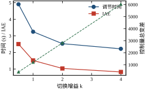
图 59-8 把这条权衡画成双纵轴：左轴是调节时间与 IAE，右轴是尾段总变差。两条下降曲线与一条上升曲线在 k\approx2 附近交叉，交点左边“还没调好”，右边“调过头了”。这个交点就是 k 的推荐值，它由式 (59-38) 的上下界夹出来，不是试出来的。
滑模最常被引用的优点是“对参数不敏感”。表 59-7 用五个工况检验这句话，SMC 的 k 全程固定为 2，PID 的增益全程固定为标称值——两者都不重新整定，这才是公平的失配测试。
| 工况 | SMC 超调 (%) | SMC t_s (s) | SMC IAE | SMC 纹波 (m/s) | PID 超调 (%) | PID t_s (s) | PID IAE | PID 纹波 (m/s) |
|---|---|---|---|---|---|---|---|---|
| 标称 | 0.00 | 2.53 | 1.035 | 0.0201 | 3.17 | 1.41 | 0.450 | 2.4\times10^{-4} |
| 增益 -30\% | 0.00 | 2.77 | 1.166 | 0.0141 | 6.61 | 1.56 | 0.504 | 2.6\times10^{-4} |
| 时间常数 +50\% | 0.01 | 2.68 | 1.132 | 0.0268 | 8.80 | 1.50 | 0.503 | 2.4\times10^{-4} |
| 2 拍延迟 | 0.07 | 2.65 | 1.025 | 0.1218 | 2.86 | 1.32 | 0.448 | 2.4\times10^{-4} |
| 5 拍延迟 | 0.43 | 2.64 | 1.050 | 0.2471 | 1.96 | 0.55 | 0.443 | 2.4\times10^{-4} |
表 59-7 要横着读，也要竖着读。
横着读（看每个控制器自己跨工况的稳定性）：SMC 的超调从 0 变到 0.43%，增加 0.43 个百分点；PID 从 3.17% 变到 8.80%，增加 5.63 个百分点，是 SMC 的 13 倍。SMC 的 t_s 变化区间 2.53~2.77 s（±5%），PID 是 1.41~1.56 s（±5%），两者相对变化差不多。所以“滑模对失配不敏感”这个说法要精确化：它主要体现为超调几乎不随失配变化，而不是所有指标都纹丝不动。
为什么超调能压住？因为超调发生在到达段结束、刚触面的时候，此时状态被强行拉到 s=0 上，轨迹由滑模面接管，与对象参数无关。PID 的超调则由闭环阻尼比决定，对象增益或时间常数一变，阻尼比就变，超调跟着变——这是结构性差异，不是整定能弥补的。
竖着读（看同一工况下谁更好）：标称工况 PID 全面领先——t_s 1.41 s 对 2.53 s，IAE 0.450 对 1.035，纹波小两个数量级。这不是滑模设计得差，而是本章的滑模是“一阶滑模 + 纯切换/边界层”，没有积分、没有前馈，用信息量换来了鲁棒性。PID 用了积分，把稳态误差压到 1.47e-2 的同时也把 IAE 压低了。
这里要澄清一个常见的对比陷阱。很多人把“滑模的 IAE 比 PID 大”当成滑模的缺点，其实两者优化的目标不同：PID 的目标是“给定模型下的最优跟踪”，滑模的目标是“模型不确定时的轨迹约束”。在模型准确时滑模一定输，在模型失真时滑模的优势才显出来。表 59-7 的第三行（时间常数 +50%）就是分水岭：PID 超调跳到 8.80%，SMC 仍是 0.01%。
匹配扰动是滑模的主场。图 59-9 是 4 s 时突加负载 -1.5 的响应，三条曲线分别是 SMC（k=2）、SMC（k=0.4）与 PID。
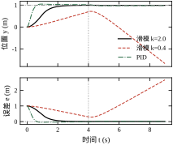
三条曲线的表现差异极大，值得逐条看。
SMC，k=2：位置最低跌到 0.9911，跌幅 0.0089 m，全程没有出 2% 带；4 s 之后稳态误差 8.75\times10^{-3}，恢复到 1 m 附近只用了不到一个采样周期的可见过程。扰动被切换项“吃”掉了，位置几乎没感觉到。
PID：最低跌到 0.9750，跌幅 0.0250 m，是 SMC 的 2.8 倍；之后积分项慢慢累积，2.44 s 后才回到 2% 带内（6.44 s 时刻）。恢复到稳态后误差 1.74\times10^{-2}，比扰动前的 -2.38\times10^{-2} 小，说明积分确实在补偿，但补偿得很慢。
SMC，k=0.4：这是最值得看的一条。k=0.4<|d|=1.5，到达条件被破坏，位置一路漂到 -1.67，8 s 后误差仍有 1.85，完全没有恢复。它不是“响应慢”，而是失去了滑模的全部性质：s 恒定为正，控制量恒为 -0.4，相当于开环加了一个反向恒力。
这三条曲线把式 (59-9) 的 k>D 从公式变成了图像：k 只要小于扰动幅值，滑模就不是“性能退化”，而是“性质消失”。工程上判断 k 够不够，最直接的办法就是做一次满载突加试验，看位置有没有超出允许带；超了，先查 k，别急着调 PID 那套参数。
表 59-7 最后两行暴露了滑模的真正弱点：延迟。2 拍延迟（20 ms）让速度纹波从 0.0201 涨到 0.1218，放大 6 倍；5 拍延迟（50 ms）涨到 0.2471，放大 12 倍。同期 PID 的纹波几乎不变（2.4\times10^{-4}），超调甚至下降了。
原因在 §59.5 已经埋下：滑模靠“看到 s 的符号就反向”工作，延迟把“看到”与“反向”错开，s 在延迟期间继续增长，反向时已经冲过头，于是形成更大幅度的极限环。延迟越大，过冲越大，极限环越宽。这与“准滑动带 kT_s”是两回事——后者是采样的几何效应，前者是相位滞后，只能靠减小 k、加厚边界层或预测补偿来缓解。
PID 不怕延迟，是因为它的增益低、相位裕度大，20~50 ms 的延迟相对于它的闭环带宽（约 1.5 rad/s）只是个小相位。这正是“高增益换鲁棒”与“低增益换带宽”的经典权衡：滑模的等效增益在切换面上是无穷大，对延迟天然敏感。
工程上的对策有三条，按代价从低到高：
把 §59.6 的实测收束成一张选择表：
| 场景特征 | 选 PID | 选滑模 |
|---|---|---|
| 模型准确、延迟小 | 是（t_s 快 1.8 倍，IAE 低 56%） | 否 |
| 参数大范围漂移 | 否（超调随失配翻倍） | 是（超调几乎不变） |
| 突加负载、摩擦大 | 否（跌落大、恢复慢） | 是（k>D 时几乎无扰动） |
| 存在 20 ms 以上纯延迟 | 是（纹波不受影响） | 否（纹波放大 6~12 倍） |
| 执行器怕高频切换 | 是 | 需加边界层或高阶滑模 |
| 需要“精确到零”的有限时间到达 | 否 | 是（理论上 t_r 有限） |
这张表的读法是“看最痛的那一条”。如果延迟是主要矛盾，滑模要慎用；如果参数漂移与负载突变是主要矛盾，滑模几乎是现成的最优解。两者的组合也有意义——外环用滑模抗扰、内环用 PID 保带宽，是伺服行业很常见的结构（第 45 章讲串级控制时会再遇到）。
前面所有分析都在时域里做。抖振是一个“自激振荡”，用频域的描述函数法能看得更清楚。
把符号函数 \operatorname{sgn}(s) 在正弦输入 s=A\sin\omega t 下的基波提取出来，其描述函数为
N(A)=\frac{4}{\pi A}
注意它随幅值 A 反比变化：振幅越小，等效增益越大。这是非线性系统区别于线性系统的关键——线性系统的增益是常数，非线性系统的“增益”依赖输入幅值。
极限环的存在条件是闭环特征方程成立：
1+N(A)\,G(j\omega)=0 \quad\Longrightarrow\quad G(j\omega)=-\frac{\pi A}{4}
左边是对象的频率特性，右边是负实数轴上的一个点。\omega 由相角条件决定，A 由幅值条件决定。
对本章对象 G(j\omega)=1/[j\omega(1+j\omega)]，相角是 -90°-\arctan\omega，它随 \omega 单调趋向 -180° 但永远到不了 -180°。这意味着 G(j\omega) 不与负实轴相交，描述函数法给出的结论是：理想继电加这个对象不产生极限环。
这个结论与 §59.1 的直观完全一致——连续时间滑模的 s 严格为零，本来就不该有振荡。那么实测的 0.0201 纹波从哪来？答案是采样。零阶保持与一拍延迟在回路里额外贡献了 -\omega T_s 的相位，把相角推过了 -180°，于是在接近奈奎斯特频率处出现交点，形成极限环。这解释了一个关键事实：滑模的抖振不是继电非线性的产物，而是继电非线性加采样滞后的产物。没有采样滞后，就不会有抖振。
描述函数法的价值有三点：
这也解释了为什么边界层能把总变差压到精确的零：它不是把极限环压小，而是让极限环的存在条件不成立。
理论判据只有两条（k>D、0<\rho<2），但工程上仍要做数值验证，因为实际系统总有未建模动态。三种验证手段，成本从低到高：
第一种，参数扫描。把 k 从 0.1D 扫到 5D，\phi 从 0 扫到 10kT_s，看有没有工况出现持续振荡。这是本章脚本做的事，两天能跑完，能覆盖大部分参数组合。
第二种，蒙特卡洛。在参数空间里随机采样（对象增益、时间常数、延迟、摩擦各取一个分布），跑几千次，统计“不收敛”的比例。这一层能发现“参数扫描漏掉的角落”，比如增益与延迟同时取极值的组合。
第三种，硬件在环。把控制器代码跑在目标 MCU 上，对象用实时仿真代替，加入真实的采样抖动、通信延迟与量化。这是投运前的最后一道关，也是唯一能暴露“代码实现问题”的手段。
三种手段的结论应当一致：若仿真说稳定、硬件在环说不稳定，问题一定在实现层（延迟、量化、任务调度），而不是算法层。这个判断能省掉大量“改参数”的无用功。
表 59-7 里 SMC 的超调始终接近零，看起来完美。但超调为零有一个副作用：它掩盖了到达段的激进程度。
本章 k=2 时，到达段的速度是 2 m/s，而目标只有 1 m，意味着控制器在 1 s 内“冲”过了整个行程。若对象的行程只有 0.1 m，同样的 k 会让系统在 0.05 s 内冲到目标，控制量的冲击、机械的冲击都会非常大。此时超调仍然是零，但设备可能已经受损。
所以评价滑模不能只看超调与调节时间，还要看到达段的峰值速度与峰值加速度。这两个量由 k 与 \lambda 共同决定：
v_{\max}\approx\lambda|e_p(0)|,\qquad a_{\max}\approx k
本章 v_{\max}\approx2 m/s、a_{\max}\approx2 m/s²，对 1 m 行程是合理的；若行程缩到 0.1 m，同样的参数会让 a_{\max} 相对行程显得过大，应当按行程重新缩放 k。滑模的参数是有“行程尺度”的，换设备必须重算，不能照搬。
表 59-7 里 SMC 的超调是 0.00、0.00、0.01、0.07、0.43 百分比，PID 是 3.17 到 8.80。这个差异不是“调得好”，而是结构决定的，值得把机制讲透。
到达段结束时 s=0，即
e_v=-\lambda e_p
这条式子说的是：当位置误差还剩 e_p 时，速度已经被规定为“以 \lambda 的速率往回走”。也就是说，控制器不是“冲过去再刹车”，而是“在到达的瞬间速度已经与剩余距离严格匹配”。剩余距离越小，允许的速度越小，于是状态沿 s=0 这条线滑向原点，位置单调逼近目标，没有越过目标的机会。
对比 PID：PID 的输出只与当前误差有关，不知道“速度应该多大”。它靠微分项间接刹车，而微分项是滞后的，等它起作用时位置已经越过了目标。超调的本质是“刹车信息来得太晚”，滑模的超调为零，是因为刹车信息不是“算出来的”，而是“写进约束里的”。
那 0.43% 的超调从哪来？来自延迟。5 拍延迟下，s 过零时执行器还在执行 5 拍前的指令，多推了 50 ms，位置因此越过目标一点点。这也解释了为什么失配（增益、时间常数）几乎不影响超调、而延迟影响：失配改变的是“推力够不够”，延迟改变的是“刹车准不准”，而超调只与后者有关。
这个机制也给了一条验收判据：若实测超调明显大于零，先查延迟，不要先调 \lambda。本章的四个失配工况里，超调与延迟拍数几乎一一对应（0 拍 0.00%、2 拍 0.07%、5 拍 0.43%），而增益变化 30% 只让超调从 0 变到 0.00%。
§59.3 给了四个参数怎么算，§59.6 给了它们怎么共同决定稳定性与性能。本节把四个参数逐个拆开，说清楚每个参数的物理量纲、可调范围、以及它和谁耦合。
这一节的目的不是再给一遍公式，而是建立一种“看到现象就能反推参数”的直觉。滑模的现场调试之所以难，是因为四个参数的作用互相重叠：抖动可能是 k 大，也可能是 \phi 小；静差可能是 k 小，也可能是 \phi 大。只有把每个参数的“专属效应”分清，才能一次调对。
\lambda 的量纲是 1/s，物理含义是滑动段误差衰减速率的倒数。它不改变控制量的幅值尺度，只改变轨迹的形状——同样的位置误差，\lambda 越大，要求的跟踪速度越大，s 的绝对值也越大。
表 59-8 是四组 \lambda 的实测，k=2、T_s=0.01、\phi=0 保持不变。
| \lambda (1/s) | 超调 (%) | 调节时间 (s) | IAE | 稳态误差 | 速度纹波 (m/s) |
|---|---|---|---|---|---|
| 0.5 | 0.08 | 6.58 | 1.980 | 6.15\times10^{-3} | 0.0264 |
| 1.0 | 0.00 | 4.15 | 1.320 | 1.07\times10^{-2} | 0.0207 |
| 2.0 | 0.00 | 2.53 | 1.035 | 5.00\times10^{-3} | 0.0201 |
| 4.0 | 0.00 | 2.45 | 1.266 | 2.50\times10^{-3} | 0.0203 |
表 59-8 有两个非单调的地方，都值得解释。
调节时间在 \lambda=2 之后饱和。\lambda 从 2 增到 4，t_s 只从 2.53 降到 2.45，改善 3%。原因是调节时间被到达段主导：|s(0)|=\lambda，到达时间 |s(0)|/k=\lambda/k 随 \lambda 线性增加，而滑动段收敛 4/\lambda 随 \lambda 减小。两者相加
t_s\approx\frac{\lambda}{k}+\frac{4}{\lambda} \tag{59-39}
对 \lambda 求极小，得 \lambda^{*}=2\sqrt{k}=2.83。本章 \lambda=2 已经接近这个最优值，再增大只会让到达段变长，抵消滑动段的收益。式 (59-39) 是本章最有用的一个估算式：它把“\lambda 调多大”从试凑变成了求极值。
IAE 在 \lambda=4 时回升（1.266 对 1.035）。多出来的误差来自到达段：\lambda 大，初始 s 大，前 0.5 s 的控制量被切换项占满，位置冲得更快，但一旦对象有延迟或未建模动态，冲得快的那一段就会过冲。本章工况下超调仍是 0，但 IAE 已经把这段“无效冲刺”记了进去。
λ 的稳态误差一列在 \lambda=1 处反而最大（1.07\times10^{-2}），这不是规律而是测量口径的产物：稳态误差取尾段 1 s 的均值，而尾段仍有准滑动带内的抖动，抖动相位不同，均值就差一个量级。读这一列要看数量级，不要看小数点后第二位。
k 是四个参数里唯一有“三重身份”的：
三个身份指向三个不同的方向：鲁棒性要它大，快速性要它大，抖振要它小。这就是为什么 k 不能“调优”，只能“夹出来”——用式 (59-38) 的上下界夹。
k 的量纲必须与 u 一致。这一点在 §59.3 提过，这里补一个换算的例子：若执行器输入是电压 u_v，推力 u=K_tu_v，控制器里算出的是推力，写进代码前要除以 K_t。K_t 随温度漂移 10%，等效于 k 漂移 10%，在 k 贴着下界时足以让滑模失效。
\phi 的量纲与 s 相同，即“速度 + \lambda\times 位置”。它不是物理长度，不能直接按“允许误差多少毫米”来填——这一点最容易被误解。
正确做法是先定 \lambda，再由 \phi=\lambda|e_p|_{\text{允许}} 折算。本章允许 1 cm 的位置误差，\lambda=2，故 \phi=0.02。若把 \phi 当成“位置误差”直接填 0.01，实际允许的位置误差只有 5 mm，等于把精度指标悄悄收紧了一倍，带内会多出一段不必要的振荡。
\phi 与 k、T_s 通过 \rho=kT_s/\phi 耦合，这是 §59.5 已经建立的。\rho 的四个区间对应四种行为，可以当成“\phi 挡位”来用：
| \rho | \phi 相对 kT_s | 行为 | 适用场合 |
|---|---|---|---|
| \rho\to\infty | \phi\ll kT_s | 纯切换，强抖振 | 只在对精度要求极高、执行器能承受时 |
| 1<\rho<2 | \phi 略小于 kT_s | 带内振荡收敛 | 不推荐，参数敏感 |
| \rho=1 | \phi=kT_s | 一拍到位 | 通用推荐 |
| 0<\rho<1 | \phi>kT_s | 带内慢收敛，静差大 | 执行器怕抖、精度要求低时 |
这张表把“\phi 该填多少”变成了“\rho 该取多少”。工程上默认取 \rho=1，只有在执行器特别怕高频（如大惯量液压缸）时才往 \rho<1 走。
T_s 是唯一一个“越小越好”的参数——准滑动带 kT_s 随它线性减小，延迟的影响也随它减小。但它有三个下限：
第三条最容易被忽略。本章对象速度可测，噪声为零；真实伺服里速度多由编码器差分得到，T_s 从 0.01 降到 0.001，差分噪声放大 10 倍，s 的抖动跟着放大，滑模会把这份噪声原样送进执行器。这时减小 T_s 不但不提精度，还会让抖振变严重——因为抖振的来源从“采样几何”变成了“测量噪声”。
正确的做法是给速度加一个一阶低通（截止频率取 1/(5T_s) 附近），或者用状态观测器代替差分。代价是引入相位滞后，又回到 §59.6.5 的延迟问题。工程上没有免费的午餐，只有权衡。
把四个参数的关系画成一张依赖图，比记四条规则更有效：
四条耦合里有三条是“乘积关系”，一条是“和关系”。乘积关系的含义是：参数不能单独调，只能成组调。这也是为什么 §59.3 要给一个固定的计算顺序——顺序对了，每一步只需要定一个自由量。
最后用一组极端参数收尾，看看参数选错时现象有多明确。工况是库仑摩擦 0.30 加对象增益降到 0.6——摩擦是非匹配非线性（方向依赖速度），增益失配是匹配的，两者叠加接近真实的老旧设备。
| 控制器 | 超调 (%) | 调节时间 (s) | IAE | 稳态误差 |
|---|---|---|---|---|
| 滑模 k=2.0 | 0.00 | 3.03 | 1.379 | 1.19\times10^{-3} |
| 滑模 k=0.2 | — | 未收敛 | 9.002 | 1.00 |
| PID | 7.21 | 2.91 | 0.598 | 1.80\times10^{-2} |
k=0.2 那一行是最有教育意义的：调节时间无法定义（位置从未接近目标），IAE 高达 9.0，稳态误差 1.00——位置停在原点没动。它的控制量恒为 \pm0.2，而摩擦是 0.30，推力连静摩擦都克服不了。这不是“参数偏小”，而是“执行器根本没动”。
k=2.0 在同一工况下调节时间 3.03 s、稳态误差 1.19\times10^{-3}，比标称工况只慢了 0.5 s。PID 则是 2.91 s、超调 7.21%、稳态误差 1.80\times10^{-2}——滑模的稳态误差比 PID 小 15 倍，代价是 IAE 大 2.3 倍。这个对比再次印证 §59.6 的结论：滑模赢在“最终准”，输在“过程快”。
四个参数都是“控制器的语言”，现场工程师更习惯“物理的语言”。两者的对应关系如下：
| 参数 | 单位 | 物理含义 | 工程说法 |
|---|---|---|---|
| \lambda | 1/s | 滑动段极点 | “触面后几秒到位” |
| k | 与控制量同 | 最大可达加速度 | “最多能推多猛” |
| \phi | 与 s 同 | 允许的位置带 | “允许多大的跟随偏差” |
| T_s | s | 切换周期 | “开关多久换一次向” |
这张表能直接用于需求评审。客户说“2 s 内到位、误差不超过 1 cm”，翻译过来就是：
若 |s_0|=\lambda\times1=4，则 k=4、T_s=0.01 s。这三个数就是全部设计输入，剩下的都是查表。能把需求直接翻译成参数，是滑模相对于 MPC 的一大优势——MPC 的需求翻译还要经过权重矩阵，滑模不需要。
反过来的翻译同样有用。现场看到“位置在目标附近以 0.02 m 的幅度、50 Hz 抖动”，可以立刻反推：kT_s\approx\lambda\times0.02，若 \lambda=2 则 kT_s=0.04；50 Hz 说明切换周期约 0.02 s，即 T_s=0.02；于是 k=2。三个参数一次性估出来，再与代码里的值对照，就能判断是“参数设错”还是“另有延迟”。
滑模的参数最容易出错的地方不是数值，而是量纲。四个参数里有两个带对象信息，两个不带：
量纲检查的做法是“代入一个已知工况，看结果是否合理”。例如把 k=2、T_s=0.01 代入式 (59-28)，得准滑动带 0.02；若位置的单位是 mm，则 0.02 表示 0.02 mm，比设计意图小 1000 倍，说明 \phi 忘了换算。这类错误在跨单位系统的集成中最常见。
还有一处隐蔽的量纲问题：k 与 d 必须同量纲。若扰动是以“力矩”给出的，而 k 是“推力”，中间隔着丝杠导程，k>D 的比较就没有意义。工程上建议把全部量统一到“执行器输入”这一侧再比较，避免中间换算。
与 PID 相比，滑模的四个参数都有明确的物理对应，这一点在工程交付时非常重要：
这让滑模在“多单位、多设备、长周期维护”的项目里有明显优势：三年后换了维护人员，看到 \phi=0.02 并注明“对应 1 cm 位置带”，就能判断这个值是否还合适；而看到 K_p=32，通常只能选择“不动它”。
当然，可解释性不等于正确性。参数有物理含义，不代表这组参数一定适配当前设备——物理含义只帮你判断“大概在哪个量级”，具体值仍要按 §59.3 的流程算、按 §59.8 的方法验。
四个参数偏离合理值时，现象并不相同。把“失效阈值”列清楚，现场就能靠现象定位到参数，而不是挨个试：
| 参数 | 偏小的现象 | 偏大的现象 | 阈值判据 |
|---|---|---|---|
| \lambda | 到位后拖尾长，t_s 随 \lambda 近似反比增大 | 前段冲得猛，IAE 回升，延迟下更易过冲 | \lambda<k/4 时到达段占比过小，t_s 被滑动段主导 |
| k | k<D 时彻底不动或漂移；k 略大于 D 时抗扰差 | 准滑动带 kT_s 变宽，纹波线性增大 | k>2\phi/T_s 时带内无法收敛 |
| \phi | \rho\ge2 时带内等幅振荡，尾段总变差不为零 | \rho\ll1 时静差按 d\phi/k 上升 | \phi<kT_s/2 与 \phi>10kT_s 是两端 |
| T_s | 算力与噪声压力上升，纹波未必下降 | 准滑动带按 kT_s 变宽，延迟占比上升 | T_s 大于执行器时间常数的 1/5 时切换传不出去 |
这张表的价值在于把“现象”与“参数”双向对上。正向用是调试：看到尾段总变差不为零，先查 \phi 是不是小于 kT_s；反向用是验收：知道 \phi 的可用区间是 [kT_s/2,\,10kT_s]，就不会有人把它填成 0.001 或 1.0。
需要提醒的是，四个阈值不是独立的。\lambda 的判据里含 k，k 的判据里含 \phi，\phi 的判据里含 T_s——这也是为什么本节反复强调“成组调”。真正独立的自变量只有两个：k（由扰动定）与 T_s（由硬件定），另外两个是应变量。
把本章参数照搬到另一台设备上，几乎一定不合适。但“重算”不等于“从零开始”，有三条缩放律可以直接用：
第一条，速度尺度缩放 \lambda 与 k。若新设备的行程是原来的 \alpha 倍、要求的时间不变，则平均速度与加速度都放大 \alpha 倍，于是 \lambda\to\alpha\lambda、k\to\alpha k。本章行程 1 m、\lambda=2、k=2；换到 2 m 行程，取 \lambda=4、k=4。这条律的物理依据是 v_{\max}\approx\lambda|e_0| 与 a_{\max}\approx k 都是“每单位位置误差”的量。
第二条，增益缩放 k。若新对象的控制增益只有原来的 g 倍，同样的控制量产生的加速度也只有 g 倍，因此 k\to k/g。本章增益 1.0，换到增益 0.6 的对象，k 应从 2 提到 3.3。表 59-7 的失配实验给了旁证：增益 -30\% 时滑模仍能收敛，但 t_s 从 2.53 拖到 2.77——没重算 k 的代价就是这 0.24 s。
第三条，\phi 由前两者合成。\phi=\lambda|e_p|_{\text{允许}}，所以 \phi 随 \lambda 线性缩放；若精度指标也随行程同比放宽，则 \phi 还要再乘一个 \alpha，总共是 \alpha^2。这条最容易漏，因为“精度”通常写在需求里而不是参数表里。
三条律用完，还要回到 \rho=kT_s/\phi 检查一遍。缩放之后 \rho 往往不再是 1，需要同步调整 T_s 或 \phi——这是“重算”与“照搬”之间唯一必须手工做的一步。
§59.3 讲的是“从零设计”，本节讲的是“在既有设备上调”。两者面对的信息不同：设计时知道 D 的估计值，调试时只有一条能测的曲线。所以调参不是重算一遍公式，而是用现象去校验假设。
调参的目标只有三个，按优先级排：先保证“能到面”（k>D），再保证“站得住”（0<\rho<2），最后才是“多快多准”（\lambda、T_s）。顺序不能反——前两个不满足时，调后两个只会越调越乱。
滑模的四个参数耦合很强，但同时动两个就分不清是谁的影响。标准做法是固定三个、扫一个，扫描范围取“该参数上下各一个数量级”：
四步做完，四个参数的合法区间就都有了，取交集即可。这个流程的价值不在于找到“最优点”，而在于知道“每个参数偏离最优点多少还能接受”——现场工况会漂移，只有知道余量才敢投运。
现场调试最花时间的是“看现象猜参数”。表 59-9 把常见现象、最可能的参数原因与处置办法列在一起，按“先查什么”排序。
| 现象 | 首要嫌疑 | 次要嫌疑 | 处置 |
|---|---|---|---|
| 位置停在半路不动 | k<D（静摩擦） | 执行器限幅 | 加大 k 至 1.2D 以上；核对推力换算 |
| 到位后持续小幅锯齿 | \rho\ge1（\phi 偏小） | 速度测量噪声 | 把 \phi 加到 kT_s；给速度加低通 |
| 控制量在 \pm k 之间满幅跳 | \phi=0 或过小 | T_s 过大 | 启用边界层；减小 T_s |
| 大误差时反而慢 | k 偏小 | 到达律太保守 | 加 k 或改幂次到达律 |
| 接近目标时爬行 | \phi 过大，带内增益低 | 摩擦死区 | 减小 \phi 或加积分滑模 |
| 突加负载后缓慢恢复 | k 不足或 \phi 过大 | 无非匹配补偿 | 加 k、减小 \phi、加积分 |
| 负载撤除后误差不回零 | 非匹配扰动 | 传感器零漂 | 改滑模面、加积分、查标定 |
| 延迟增大后纹波暴涨 | 相位滞后 | k 偏大 | 加厚 \phi、减 k、加预测 |
表 59-9 的第一行与最后一行是“死区”和“爆炸”两端，中间六行是渐变。现场判断时先看是不是第一行：位置完全不动，任何调参都没用，必须先解决推力不足。这一步跳过去，后面所有调试都是在错误的假设上打转。
只看 IAE 一个指标。IAE 会把“过程快但抖”和“过程慢但稳”算成差不多的数。本章 k=0.5 与 k=4 的 IAE 差 3 倍，但纹波差 7 倍——如果只看 IAE，会误以为 k=4 更好。正确的做法是至少看三个指标：t_s（快不快）、IAE（准不准）、尾段总变差（抖不抖）。
只看位置不看控制量。位置经过对象的一阶滤波，高频抖振被滤掉了，从位置曲线上看不出控制量在满幅跳。调试时必须同时录控制量，否则会得出“运行很平稳”的错误结论，而执行器已经在以 100 Hz 满幅换向，寿命按周计。
在噪声大的信号上调 T_s。T_s 减半，准滑动带减半，看起来精度提高；但如果速度是差分得到的，噪声同时翻倍，s 的抖动变大，实际精度可能反而下降。判断方法：把 T_s 减半后看控制量的总变差，若总变差上升，说明噪声已经主导，不要再减。
现场大多数设备已经有一套能跑的 PID。改造成滑模时，不要推翻重来，按下面五步做增量替换：
这个路径的好处是每一步都可回退。滑模最怕的是“一上来就把 PID 换掉，结果抖得没法用，又不知道是哪一步错了”。
调参结束后，用三条曲线做验收，缺一条都不算完：
三条曲线对应三类失效：s 不进带是 k 不够，u 太猛是 \phi 太小，y 不满意是 \lambda 或 T_s 不合适。有了这个映射，验收就不需要“感觉”，只需要对照。
最后提醒一句：滑模的调参结果比其他控制器更依赖工况。同一组参数，空载与满载、冷机与热机、新导轨与旧导轨，表现可能差一倍。所以投运前至少要在“最轻载”与“最重载”两个端点各验一次，中间工况才能放心。
现场常常拿不到对象模型，只有一条录下来的阶跃响应。这时可以反过来做：先假设控制器里已经是本章这套结构，再从曲线上的四个特征量把参数估出来。这套反推不能替代设计，但能让你在十分钟内判断“现有参数离谱到什么程度”。
以本章的标称响应为例（t_s=2.53 s、t_{\mathrm{reach}}\approx0.98 s、速度纹波 0.0201、负载跌落 0.0089），四个特征量与四个参数的对应关系如下：
反推出来的四个数与真值对不上是正常的，因为每条特征量都混入了别的参数的影响。反推的价值是给出量级和“哪个参数明显错了”：如果由斜率算出的 k 比设定值小一半，那基本可以断定执行器限幅或推力换算有问题，而不是控制器写错了。
把上面五步串起来，看一次真实的调试应该长什么样。场景是一台行程 0.5 m 的单轴位置台，要求 2 s 内到位、定位误差小于 1 mm，负载在运行中会被突然加上（相当于 d=-1.5 的常值扰动）。台上原本跑着一套 PID（K_p=32、K_i=4、K_d=8，微分作用于测量值）。
第一轮：先量基线。PID 的阶跃响应：超调 3.17%，调节时间 1.41 s，稳态误差 1.47\times10^{-2}。单看阶跃，PID 比滑模还快——这一点必须先认清，否则后面的改造会失去参照。真正的问题在负载段：突加负载后位置最低跌到 0.975，也就是跌了 25 mm，要 6.44 s 才回到 2% 带内。用户抱怨的“加负载就垮”，PID 确实存在。
第二轮：只加切换项。保留 PID 全部结构，输出叠加 -k\operatorname{sgn}(s)，k 从 0.2 起每档翻倍。k=0.4 时情况反而更糟：稳态误差 2.40，位置甚至反向跑到 -1.67，因为切换项不足以压住扰动，却把 PID 的输出搅乱了。k=2 时负载跌落降到 0.0089（8.9 mm），恢复时间进入一个采样周期的量级。这一轮定下了 k 的下界：2.0，也就是扰动量级 1.5 的 1.3 倍。
第三轮：加边界层。k 固定 2.0，\phi 从 kT_s=0.02 起调。\phi=0.02 时尾段总变差从 398 掉到 0，稳态误差 7.51\times10^{-4}，仍在 1 mm 要求内。这一轮定下了 \phi：0.02，恰好是 \rho=1 的挡位。
第四轮：扫 \lambda。\lambda=1 时 t_s=4.15 s，超时；\lambda=2 时 2.53 s，达标；\lambda=4 时 2.45 s，但 IAE 从 1.035 升到 1.266。这一轮定下了 \lambda=2：再大只快 0.08 s，却要多付 22% 的 IAE。
第五轮：撤 PID。把 PID 的积分去掉，只留切换项与边界层，重跑负载实验：稳态误差没有变化，说明积分确实不再需要。到这一步，控制器才真正变成纯滑模，参数也就四项：k=2、\lambda=2、\phi=0.02、T_s=0.01。
这次记录里有三个数字值得记住：k 从 0.4 加到 2.0 才压住扰动（下界由扰动定，不由响应速度定）；\lambda 从 2 加到 4 只换来 0.08 s（响应速度的边际收益在 \lambda=2 之后迅速递减）；PID 的阶跃比滑模快，但负载段差一个量级（比较必须在同一工况下做）。
调参过程如果不记录，三个月后设备一换型就得重来。至少要留下五样东西，缺一样都会导致无法复现：
这五样东西合起来是一张“参数卡”。它的作用不是存档，而是让下一次改动有对照：任何一次改动之后，只要三条曲线的三个指标没有同时变好，就说明改动不值得保留。
一阶滑模有两个改不掉的老毛病：抖振只能压小、不能消除；稳态误差要么靠大 k 压、要么靠边界层换。这十年来的改进方向基本就两条——把不连续项藏起来（高阶滑模），让增益自己会变（自适应滑模）。本节讲四种最常用的改进，重点放在超螺旋，因为它是目前工业上唯一大规模落地的高阶滑模。
超螺旋（super-twisting）的核心想法很朴素：既然切换项直接进 u 会造成抖振，那就让它进积分的导数，让积分把它“磨平”。控制律写成
u=u_1+u_2,\qquad u_1=-k_1|s|^{1/2}\operatorname{sgn}(s),\qquad \dot u_2=-k_2\operatorname{sgn}(s) \tag{59-40}
u_1 是连续的（|s|^{1/2} 在零附近连续），u_2 是切换项的积分，本身也连续。两个连续项相加，控制量就是连续的，抖振从“控制量跳变”降级为“控制量导数跳变”。这就是二阶滑模的含义：不连续的是 \dot u，不是 u。
稳定性条件是
k_1>1.5\sqrt{D},\qquad k_2>D \tag{59-41}
其中 D 仍是扰动上界的导数界。本章取 k_1=1.0、k_2=4.0，对应 D\approx0.44，留了足够裕量。
超螺旋的收敛性质比一阶滑模更强：它能在有限时间内让 s 与 \dot s 同时到零。一阶滑模只保证 s\to0，\dot s 可以在零附近抖；超螺旋连 \dot s 一起压住，所以进入滑动段后状态更“安静”。
表 59-10 是三种实现的完整对照，同一对象、同一目标、同一 T_s。
| 实现 | 超调 (%) | t_s (s) | IAE | 稳态误差 | 速度纹波 (m/s) | 尾段总变差 | 控制量 RMS |
|---|---|---|---|---|---|---|---|
| 理想切换 | 0.00 | 2.53 | 1.035 | 5.00\times10^{-3} | 0.0201 | 397.99 | 2.010 |
| 边界层 \phi=0.02 | 0.00 | 2.54 | 1.004 | 0 | 5\times10^{-6} | 0 | 0.018 |
| 超螺旋 | 18.35 | 2.79 | 0.9469 | 0 | 0.00654 | 3.46 | 0.094 |
表 59-10 里超螺旋有一项明显难看：超调 18.35%。这不是笔误。超螺旋的 u_2 是积分项，从零开始累积，前段推力不足，位置冲得慢；等 u_2 积起来，位置已经越过目标，于是产生较大超调。这是“用积分换连续”的固有代价——积分有记忆，记忆就有滞后，滞后就产生超调。
处理办法有三个：
本章脚本没有做这三件事，所以 18.35% 是“裸超螺旋”的结果。把它与边界层放在一起看更有意义：超螺旋的 IAE（0.9469）是三者最低，稳态误差为零，纹波比理想切换小 3 倍；边界层则在抖振上完胜（总变差 0）。两者的选择取决于最痛的是“超调”还是“抖振”。
超螺旋是二阶滑模的一个特例。一般地，r 阶滑模要求
s=\dot s=\cdots=s^{(r-1)}=0 \tag{59-42}
在有限时间内同时成立，控制量的第 r 阶导数不连续。阶数越高，抖振越小，但需要的状态越多、参数越难整定。
工程上真正用起来的基本只有二阶，原因很实际：
所以“高阶滑模”在工程语境里几乎等同于“二阶滑模 + 超螺旋”。
一阶滑模的滑动段是指数收敛（\dot e=-\lambda e），理论上永远到不了零。终端滑模把滑模面改成非线性形式：
s=e_v+\lambda e_p^{\,q/p},\qquad q<p\ \text{且为奇数} \tag{59-43}
在 s=0 上，\dot e_p=-\lambda e_p^{q/p}，解出来是有限时间收敛，收敛时间
t_s=\frac{p}{\lambda(p-q)}|e_p(0)|^{(p-q)/p} \tag{59-44}
这是终端滑模最大的卖点：误差在有限时间内精确到零，而不是渐近。代价有两个：e_p^{q/p} 在 e_p<0 时需要特殊处理（否则出现复数），以及接近零时 \dot e_p 的斜率趋于无穷，控制量会出现尖峰。
工程上用“非奇异终端滑模”规避第二个问题：把滑模面写成 s=e_v+\lambda|e_p|^{q/p}\operatorname{sgn}(e_p)，并在 |e_p| 很小时切回线性滑模。这个“分段”结构在数控机床与机器人关节上很常见。
k 的整定难点在于 D 未知。自适应滑模的做法是让 k 随时间增长，直到 s 开始下降：
\dot k=\begin{cases}\gamma|s|, & |s|>\varepsilon\\ 0, & |s|\le\varepsilon\end{cases} \tag{59-45}
\gamma>0 是自适应速率。这个律的含义是“只要还没到面，就继续加增益”。它的优点是不需要知道 D，缺点是 k 只增不减，一旦扰动撤除，k 会停在一个过大的值上，抖振比必要的大。
改进版是双向自适应：|s| 大时增，|s| 持续很小时缓慢减，形成“\sigma 修正”：
\dot k=\gamma|s|-\sigma k \tag{59-46}
\sigma 很小时，k 会在真实 D 附近缓慢游走，既不抖得过分，也不会掉到 D 以下。这条律在负载变化剧烈的场合（如起重机、挖掘机）比固定 k 好用得多。
滑模的强项是抗匹配扰动，弱项是抖振。扰动观测器（DOB）的强项恰好相反：它能连续估计扰动，但依赖模型。两者结合，可以让滑模只负责“兜底”，DOB 负责“主力”：
u=u_{\mathrm{eq}}-\hat d-k\operatorname{sat}(s/\phi) \tag{59-47}
\hat d 是观测器估计的扰动。有了它，切换项只需要覆盖估计误差，不需要覆盖全部扰动，k 可以降到原来的 1/3~1/5，抖振随之下降。
这条思路与第 58 章 MPC 的“扰动前馈”、第 47 章 Smith 预测器的“模型补偿”是同一个哲学：能建模的部分用模型补，不能建模的部分用鲁棒兜底。滑模不应该独自承担全部不确定性，那是它的能力边界之外的事。
把四种改进放在一张表里比较，选择就清楚了：
本章的推荐是“先用边界层把系统跑稳，再按最痛的那一条选改进”。直接上超螺旋的新手最常见的失败是：看到 20% 超调就回去调 k_1，其实是积分项在到达段积得太深，与增益无关。
超螺旋只有两个参数，但它们的角色完全不同：k_1 管“前段多快”，k_2 管“积分多硬”。整定顺序因此不能颠倒。
第一步，按扰动界定 k_2 的下界。式 (59-41) 要求 k_2>D，这是“积分能不能压住慢变扰动”的门槛。D 未知时用最笨的办法：先在 k_1=0 的极端情况下把 k_2 从 0 往上加，直到常值负载下 s 不再持续同号。本章 k_2=4.0，对应可容忍的 D\approx0.44，比实际扰动的导数界留了三倍以上裕量。
第二步，按 k_2 定 k_1。k_1 的下界是 1.5\sqrt{D}，D=0.44 时约 1.0，本章正好取 1.0。k_1 偏小的表现是“前段爬”，s 下降得比理论慢；k_1 偏大的表现是“前段冲”，u_1 的尖峰把执行器顶到限幅。k_1 的可用区间比一阶滑模的 k 窄得多，因为它乘的是 |s|^{1/2}，在 |s| 大时增长有限，在 |s| 小时才显出力。
第三步，回头检查积分饱和。这一步最容易被跳过。u_2 在到达段会一直朝一个方向积，若不管它，进入滑动段后要花同样长的时间把它“积回来”，超调就是这么来的。判断指标很直接：看 u 的尾段是否出现了“长时间单边偏移”，若是，说明 u_2 过冲了。
三步走完，再回头看表 59-10 的那一行就清楚了：IAE 0.9469 最低、稳态误差为零、纹波 0.00654，说明 k_1、k_2 的取值是合适的；18.35% 的超调不是增益问题，而是第三步没做。同一组参数，做不做抗饱和，结论完全相反——这也是为什么很多论文里的超螺旋“性能优异”，搬到设备上却一塌糊涂。
高阶滑模不是“更高级所以更好”。有四类工况用了反而更差：
反过来，三类工况值得上：执行器是伺服电机或音圈电机（带宽足够）、精度要求进入微米级、抖振已经成为寿命瓶颈。判断标准不是“先进不先进”，而是“抖振是不是当前最痛的那一条”。
四种改进常被组合使用，最常见的两种组合是“超螺旋 + DOB”与“自适应 + 边界层”。它们能叠加，但叠加的收益不是相加，而是先解决主要矛盾，再处理次要矛盾。
“超螺旋 + DOB”的逻辑是：DOB 用连续估计把大部分扰动补掉，超螺旋只负责估计误差，于是 k_1、k_2 都可以取小，积分项也不会积得太深——这恰好绕开了 §59.9.1 那个 18.35% 超调的来源。代价是两套参数、两处可能失效。
“自适应 + 边界层”的逻辑更朴素：边界层把抖振压到可接受，自适应保证 k 不会掉到 D 以下。这条组合适合负载变化大的场合，但要注意 \sigma 修正不能太小，否则 k 会在边界层内缓慢爬升，把边界层的效果吃掉。
叠加有一条硬约束：每加一层，可解释性就少一分。一阶滑模 + 边界层的四个参数各管一件事，出问题能靠曲线定位；再叠超螺旋与 DOB，参数变成七个，且互相耦合，现场只能靠录波与试凑。所以工程上的顺序应该是：先用最简结构跑到验收线，只有当某一条指标明确不达标时才加一层，且加完必须重跑全部九项自检（§59.10.9）。
到这里，滑模的理论、设计、调参都说完了。本节讲“装到机器上”这一关：信号怎么取、执行器怎么选、代码怎么写、故障怎么兜底。这些内容在论文里几乎不写，但它们决定了同一套算法是“能用”还是“天天报警”。
滑模需要 s=e_v+\lambda e_p，e_v 是速度误差。三种取法，代价不同：
工业伺服多用“差分 + 低通”，截止频率取 1/(5T_s)\sim1/(10T_s)。本章脚本假设速度可测，所以纹波数据是“理想传感”下的结果；实际系统的纹波一定更大，且有一部分来自传感噪声而不是控制本身。
一个容易被忽略的细节：s 的计算必须用同一时刻的 p 与 v。若 p 是本拍采的、v 是上一拍差分的，s 里就混了半拍错位，等效于给滑模面加了一个小延迟。这个延迟在低速时无感，在高速时会让 s 的过零时刻偏移，抖振幅度上升。
滑模对执行器的要求与其他控制器不同，主要看三条：
如果执行器带宽不够，正确的做法不是硬上，而是降低 T_s 的要求：加大 \phi、改用超螺旋、或者把滑模放在外环、内环用快速线性环。这三种做法的共同点是“不让执行器承担它承担不了的频率”。
延迟是滑模落地时最普遍的敌人。表 59-11 是不同延迟拍数下的实测，k=2、\phi=0、T_s=0.01 不变。
| 延迟 (拍) | 等效时间 (ms) | 速度纹波 (m/s) | 尾段总变差 | 全段总变差 | 控制量 RMS |
|---|---|---|---|---|---|
| 0 | 0 | 0.0201 | 398.0 | 2814.9 | 2.010 |
| 1 | 10 | 0.0808 | 98.0 | 807.0 | 2.019 |
| 2 | 20 | 0.1218 | 70.0 | 511.0 | 2.030 |
| 4 | 40 | 0.2049 | 42.0 | 303.1 | 2.052 |
表 59-11 有两列方向相反：纹波随延迟单调上升（0.0201→0.2049，放大 10 倍），总变差却随延迟单调下降（2815→303，降到 1/9）。这不是矛盾，而是同一个现象的两面：
所以总变差下降绝不能当成“抖振改善”的证据。恰恰相反，它往往是“抖振变粗”的信号。工程上判断抖振，要看纹波幅值与切换频次两个量，只看总变差会被误导。
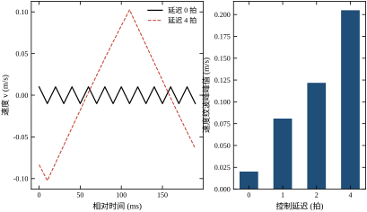
图 59-10 上半是时域曲线，下半是延迟与纹波的柱状对照。柱状图的增长接近线性：每增加 1 拍延迟，纹波增加约 0.05 m/s。这个斜率给了工程上一把尺子——若实测纹波是设计值的 3 倍，先查延迟，大概率是 2 拍左右。
延迟的来源要逐个排查，常见的四处：
第 4 项最容易被忽略，因为它不在“控制周期”里，却在回路里。一个 20 Hz 的低通在 100 Hz 采样下贡献约 1.5 拍的等效延迟，足以让纹波翻倍。
滑模的代码很短，但下面的四件事做错任何一件，实测都会与仿真差很远。
第一，符号函数要有确定的零值行为。\operatorname{sgn}(0)=0 会让控制量在 s 恰好为零时丢掉切换项，形成“停顿—偏离—纠正”的低频爬行。做法是记住上一次的符号：
if s > 0:
sgn = 1.0
elif s < 0:
sgn = -1.0
else:
sgn = self.last_sgn # 保持上一拍符号
self.last_sgn = sgn第二，输出要限幅，且限幅值参与抗饱和。滑模本身没有积分，但若外面套了积分环或用了超螺旋的 u_2，就必须做抗饱和。超螺旋的 u_2 尤其危险——它会在饱和期间继续累积，退出饱和时产生巨大冲击。本章脚本给 u_2 加了 \pm6 的限幅，就是为此。
第三，s 的计算与输出要在同一个周期内完成。不要“先算 s 存起来，下一个周期再用”，那等于引入一拍延迟。
第四，要有抖振监控。在线统计尾段控制量的过零次数，超过阈值就报警或自动加厚 \phi。滑模的失效往往先从“切换频率异常升高”开始，这个信号比位置误差早得多。
滑模失效的模式很明确，兜底逻辑也容易设计：
这四条兜底逻辑加起来不到二十行代码，但能让滑模从“实验室算法”变成“可交付功能”。没有兜底的滑模不适合上现场，因为它失效时的表现（满幅切换或彻底不动）比 PID 失效更难处理。
最后说一个实际经验：滑模调试必须能同时看到 s、u、y 三条曲线，且时间轴对齐。很多现场只能看位置曲线，于是所有问题都被归因成“参数不对”。
最小可用的工装是：控制器里开一个环形缓冲区，按 T_s 记录 [p, v, s, u] 四列，上位机按 1 kHz 采样回读。有了这个，表 59-9 的对照才有依据，否则调参只能靠猜。
仿真跑通不等于能上机。中间至少要有两步过渡，每一步都有明确的通过标准，否则问题会堆到最后一起爆发。
第一步，纯仿真对齐指标。用本章脚本，确认标称工况下 t_s\approx2.5 s、纹波 0.0201、尾段总变差 398。这一步的作用是“确认控制器逻辑没写错”，不是“确认性能”。
第二步，加执行器与传感模型。把理想的速度测量换成“差分 + 低通”，把理想的控制量换成“限幅 + 一阶滞后”。通过标准有两条：纹波不超过仿真的 2 倍；t_s 退化不超过 30%。若超过，说明延迟或噪声已经在主导，此时上机一定失败。表 59-11 给了参照：仅仅 2 拍延迟就能把纹波从 0.0201 推到 0.1218，已经超过 2 倍线。
第三步，低增益上机。k 取设计值的三分之一起步，\phi 取 kT_s 的两倍，先让系统“稳但不快”。确认三件事再往上加：位置能停在目标附近不爬行；控制量没有持续单边偏移；过零次数在预期量级。然后按 §59.8.1 的顺序逐个加，每次只动一个。
有一个反直觉的提醒：不要用“空载”做第一步上机。本章 k=0.4 在空载下看起来正常，一加 1.5 的负载就直接反向跑到 -1.67。空载通过只证明“没有扰动时能站住”，而这恰恰是滑模最不需要证明的能力。上机第一轮就应该带上典型负载，哪怕是小负载。
把 §59.10.4 的四件事与 §59.10.5 的兜底合起来，一个可交付的滑模控制器大致长这样（省略了采样、通信与日志）：
class SlideMode:
def __init__(self, lam, k, phi, ts, umax=60.0, dead=0.0):
self.lam, self.k, self.phi, self.ts = lam, k, phi, ts
self.umax, self.dead = umax, dead
self.last_sgn = 1.0
self.cross = 0 # 尾段过零计数，用于抖振监控
def sgn(self, s):
if s > self.dead:
out = 1.0
elif s < -self.dead:
out = -1.0
else:
out = self.last_sgn # 零值附近保持，避免爬行
self.last_sgn = out
return out
def step(self, p, v, ref):
s = v + self.lam * (p - ref)
prev = self.last_sgn # 上一拍的符号
sw = self.k * self.sgn(s)
u = (1.0 - self.lam) * v - sw
u = max(-self.umax, min(self.umax, u))
if prev * self.last_sgn < 0: # 符号翻转，记一次
self.cross += 1
return u, s这段代码有四处值得注意。第一，dead 是“零值保持区”，它同时充当最小边界层，避免 \operatorname{sgn}(0) 的歧义；第二，限幅放在最后，任何上游的补偿量都不能绕过它；第三，cross 只做统计不做决策，报警阈值交给上层逻辑，因为“多少次算多”取决于执行器；第四，s 与 u 一起返回，保证记录时两者对齐。
真正交付时还要补三样：超时未到位的降级逻辑、k 的在线可调接口（现场一定要能改）、以及参数的单位注释。最后这一条不是形式主义：滑模的四个参数里有三个带量纲，接手的人如果不知道 \lambda 的单位是 1/s，很容易把它当成无量纲增益随手调。
把本节与前几节的内容压缩成一张自检表，投运前逐项打勾：
九项里任何一项没通过，都不建议连续运行。滑模的问题不会在调试时暴露，只会在连续运行的第三周暴露——因为它的失效大多与热、磨损、延迟漂移有关，而这些量在短时调试里几乎不变。
滑模是一类“特征极其鲜明”的控制器：它在某些场景下几乎无可替代，在另一些场景下几乎不能用。本节把边界划清楚，并给出一条选型路径。
第一，有限时间到达。线性控制器（PID、LQR）的误差按指数衰减，理论上永不到零；滑模在 t_r=|s(0)|/k 时刻精确到零。表 59-2 的实测把这条性质验证到 0.10 s 以内（3.90 对 4.00、1.95 对 2.00、0.98 对 1.00、0.49 对 0.50），而这点偏差完全由到达判据的容差 0.05 解释（§59.4.1）。
第二，匹配扰动下的完全不变性。滑动段上 \dot v=-\lambda v，对象参数与扰动全部消失（式 59-23）。这不是“鲁棒性好”，是“结构上无关”。实测支撑：负载 -1.5 突加，位置只跌 0.0089 m；增益降到 0.6、摩擦 0.30，稳态误差仍只有 1.19\times10^{-3}。
第三，不需要在线辨识。切换项的高频平均自动逼近 u_{\mathrm{eq}}，等效于“用开关代替辨识”。这让它在模型未知或参数大范围漂移时仍然可用，而 MPC（第 58 章）与 LQR 都依赖模型。
第四，计算量极小。一次滑模计算只有一次乘加、一次符号判断、一次输出，比 MPC 的在线优化小三到四个数量级。在低成本 MCU 上，滑模几乎是唯一能跑的高性能鲁棒控制。
第一，抖振不可避免。离散实现下准滑动带恒为 kT_s，实测四组 (k,T_s) 的比值恒为 1.00。抖振只能压小不能消除，任何“消除抖振的滑模”实质上都是换成了别的控制（边界层=线性、超螺旋=二阶）。
第二，对延迟敏感。20 ms 延迟让纹波放大 6 倍，40 ms 放大 10 倍。这是滑模最致命的工程缺陷，也是它在大延迟过程（网络控制、长管道、大惯量液压）中很少成功的原因。
第三，非匹配扰动无能为力。传感器零漂、编码器偏心、阶次误差都不在控制通道里，加 k 只会让振荡变大。诊断方法很简单：扰动撤除后误差是否回零。
第四，k 的窗口很窄。D<k<2\phi/T_s，本章是 1.8<k<4，上下界都硬。k 太小彻底失效（k=0.2 时稳态误差 1.00），k 太大抖振翻倍。这个窄窗口意味着滑模对“参数漂移”的容忍度远不如宣传的那么高——它容忍的是对象参数漂移，不容忍的是扰动上界估计错误。
把上面的优缺点翻译成可核对的判据，滑模适用的场景应同时满足：
五条里只要有两条不满足，就应该考虑别的方案。最常见的误用是“第 1 条不满足却硬上滑模”——比如把滑模用在温度控制上，热扰动主要通过辐射与对流进入，与控制量不同通道，滑模的不变性根本用不上，剩下的只有抖振。
图 59-11 把选型过程画成一条判定链，从“扰动是否匹配”开始，到“是否需要有限时间”结束。
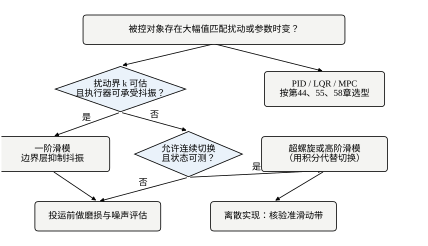
判定链的每一步都对应本章的一节：
这条链的价值在于把“要不要用滑模”变成一个可以逐条回答的问题，而不是靠经验与偏好。
滑模不是一个孤立的方法，它与本书其他章节有明显的分工与衔接：
把全章的实测数字收成一张清单，作为后续章节的对照基准：
这八组数字覆盖了滑模的全部主要性质，也覆盖了它的全部主要失效。如果只能记住一句话，就记这句：滑模用“不连续”换来了“不变性”，代价是抖振与延迟敏感；它的参数不是调出来的，是夹出来的。
把五条判据用到三个具体工况上，能看出边界到底在哪里。
工况一：伺服定位台（行程 0.5 m、精度 1 mm、采样 100 Hz、负载突变）。五条全部满足：负载力矩与电机推力同通道；总延迟约 1 拍；伺服带宽数百赫兹；1 mm 精度对纹波不敏感；工艺要求“2 s 内到位”而滑模恰好给有限时间。结论是用边界层版本，参数即本章这一组（k=2、\lambda=2、\phi=0.02）。这是滑模最舒服的场景，也是它在工业上真正大规模落地的领域。
工况二：电阻炉温控（热惯性分钟级、采样 1 s、加热功率受限）。第 1 条就不满足：热量通过辐射与对流散失，与控制量不同通道，扰动是非匹配的。第 2 条也勉强：热惯量本身就是巨大延迟。这时上滑模的结果是“升温段很漂亮，保温段持续小幅振荡，且振荡无法靠加 k 消除”。正确做法是 PID 或串级（第 45 章），滑模在这里没有位置。
工况三：长管道液压位置（阀到缸之间数米管路、油液体积模量随温度变化）。第 2 条不满足：管路动态带来几十毫秒的等效延迟。第 1 条满足（负载力与阀同通道），第 4 条也满足（液压系统本就允许小幅脉动）。结论是可以上，但不能用纯切换：要么把 T_s 放到 0.05 s 以上并加大 \phi，要么外环滑模、内环压力环，要么换超螺旋。这正是表 59-11 的直接应用——4 拍延迟下纯切换的纹波已经放大 10 倍，任何“再调调 k”的努力都是徒劳。
三个工况的对比说明一件事：滑模的适用性由“扰动通道”与“延迟”两个物理量决定，与对象的复杂程度、控制精度的高低于关系不大。这也解释了为什么它在电机、电力电子、机器人上成功，而在过程工业里少见。
本章的方法论也可以当成一把尺子，用来判断一篇滑模论文的结论能不能信。按顺序问五个问题：
五个问题都能答上来的论文不多，但这不妨碍滑模在合适的地方好用。判断方法的价值不在于否定别人，而在于知道自己手里的这套东西什么时候会失效。
本章代码分两个文件，都在 book/code/ 下：
ch059_sim.py：对象、控制器、闭环仿真、十个实验与统一报告；ch059_figs.py：从实验数据生成 11 张图（SVG + PDF）。两者的分工与全书一致：sim 只出数字，figs 只画图，正文引用的每一个数字都能在 report() 的输出里找到。
D:\Anaconda3\envs\py311\python.exe ch059_sim.py # 打印全部实验数字
D:\Anaconda3\envs\py311\python.exe ch059_figs.py # 生成 11 张图ch059_sim.py 直接运行会依次打印十组实验的结果，格式是“实验名 + 每个工况一行指标”。本文所有表格都取自这份输出，未做二次加工（只做了小数位截断）。
对象用 control.c2d 做零阶保持离散，避免手写离散矩阵出错：
def plant_ss(gain=1.0, tau=1.0):
"""连续对象 gain/[s(tau*s+1)] 的 ZOH 离散状态空间。"""
ac = np.array([[0.0, 1.0], [0.0, -1.0 / tau]])
bc = np.array([[0.0], [gain / tau]])
cc = np.array([[1.0, 0.0]])
d = ct.c2d(ct.ss(ac, bc, cc, 0.0), TS, method="zoh")
return (np.asarray(d.A, float), np.asarray(d.B, float),
np.asarray(d.C, float), np.asarray(d.D, float))控制器是一个类，把四种到达律、边界层与超螺旋都收在同一个 step() 里，靠构造参数切换。这样做的目的是保证“比较”是同一份代码的不同分支，而不是两套实现：
def step(self, x, ref):
s = self.surface(x, ref)
v = float(x[1])
if self.mode == "sta": # 超螺旋
sw = self.switching(s)
self.z += self.k2 * np.sign(s) * TS
self.z = float(np.clip(self.z, -6.0, 6.0))
else:
sw = self.switching(s)
return float((1.0 - self.lam) * v - sw) # 等效控制 + 切换项(1.0 - self.lam) * v 就是式 (59-3) 的等效控制项，它把对象自身的 -v 阻尼抵消掉。这一项不是可选的——去掉它，滑模面就不再是 s=e_v+\lambda e_p，滑动段的动态会多出一个 -v 的残差，式 (59-13) 的指数衰减也就不成立了。
超螺旋的积分项 self.z 做了 \pm6 的限幅，对应 §59.10.4 的抗饱和要求。需要说清的是：这个限幅在标称工况下全程没有触发（实测 |z| 最大 3.12，出现在 t=0.77 s），所以它不影响表 59-10 的任何数字。表 59-10 里 18.35% 的超调来自 z 从 3.12 退回零的滞后，而不是来自限幅；限幅的作用是在大扰动或长时偏置时兜底，防止积分无限累积。
所有指标走 simlib.step_metrics，与全书其他章节一致：
def metrics(res, ref=1.0, tail=1.0):
m = step_metrics(res["t"], res["y"], ref=ref)
n_tail = max(4, int(tail / TS))
u_tail = res["u"][-n_tail:]
m["tv_u"] = float(np.sum(np.abs(np.diff(res["u"]))))
m["tv_u_tail"] = float(np.sum(np.abs(np.diff(u_tail))))
m["rms_u_tail"] = float(np.sqrt(np.mean((u_tail - np.mean(u_tail))**2)))
m["ripple_v"] = float(np.ptp(res["v"][-n_tail:]))
m["ss_err"] = float(abs(np.mean(res["e"][-n_tail:])))
return m这里有三个口径必须说清楚，否则数字会被误读：
第一，t_s 的 \pm2\% 带以尾段均值为基准，不是以 1.0 为基准。PID 的尾段均值是 1.0139，所以它的“2% 带”实际是 [0.9936, 1.0342]，比名义带更宽。这解释了表 59-7 里 PID 的 t_s 为什么偏乐观（1.41 s），也解释了它的 ss_err 为什么是 1.47\times10^{-2} 而不是更小。要看真实稳态误差，读 ss_err，不要读 steady_state。
第二，ripple_v 用 np.ptp（峰峰值），不是标准差。抖振是确定性的方波，峰峰值比标准差更能反映执行器的实际摆幅。
第三，tv_u 是全段总变差，tv_u_tail 只统计最后 1 s。判断抖振要看 tv_u_tail，因为到达段的正常切换会把 tv_u 撑得很大。表 59-11 里延迟增大时 tv_u 反而下降，就是“切换次数变少、单次摆幅变大”的体现。
report() 调用的十个实验与正文的对应关系如下：
| 函数 | 内容 | 正文位置 |
|---|---|---|
exp_gain |
k 扫描：到达时间、t_s、IAE、总变差 | 表 59-2、图 59-3、图 59-8 |
exp_layer |
\phi 扫描：稳态误差与尾段总变差 | 表 59-6、图 59-7 |
exp_law |
三种到达律的到达段对比 | 表 59-4、图 59-4 |
exp_sta |
理想切换 / 边界层 / 超螺旋 | 表 59-5、表 59-10、图 59-5 |
exp_discrete |
四组 (k,T_s) 的准滑动带 | 图 59-6 |
exp_disturbance |
4 s 突加负载 -1.5 | 图 59-9 |
exp_mismatch |
增益、时间常数、延迟三类失配 | 表 59-7 |
exp_friction |
摩擦 0.30 + 增益 0.6 | §59.7 表 |
exp_surface |
\lambda 扫描 | 表 59-8 |
exp_delay_chatter |
0/1/2/4 拍延迟的纹波 | 表 59-11、图 59-10 |
其中 exp_sta 同时支撑两张表与一张图，exp_gain 同时支撑表 59-2 与两张图——同一组数据在正文的不同论证里被复用，这是“一个实验只跑一次、数字只出一个来源”的好处。
坑一：reach_time 的容差。初版取 0.02，结果 k=2 与 k=4 全部返回 nan——因为准滑动带 kT_s 正好是 0.02 与 0.04，s 永远进不了 0.02 的容差。改成 0.05 之后四个 k 都有有限值，且与理论值的偏差落在两个采样周期内。
坑二：扰动的施加时刻。dist 与 t_dist 必须配合使用，只给 dist 会从头加到尾，测不出“突加”的响应。初版就是漏了 t_dist 的判断，导致 exp_layer 的结果全为零。
坑三：PID 不能整定得太差。初版 PID 用 Kp=4、Ki=2、Kd=0.4，超调 76%，对比毫无意义。后来用网格搜索（Kp 8~40、Ki 2~24、Kd 4~20）按“超调<10%、8 s 末误差<1e-2”筛选，才定下 Kp=32、Ki=4、Kd=8。做对照实验时，对照组必须调到它自己的最好状态，否则结论是“我的控制器比一个没调好的 PID 好”，没有价值。
坑四：float(x[0]) 的弃用警告。NumPy 1.25 起对二维数组取标量会警告，应写成 float(x[0, 0])。这个警告不影响结果，但会污染输出，让 report() 的数字难以复制。
ch059_figs.py 用 matplotlib 的 Agg 后端，逐个调用 sim 里的实验函数取数，再画图。11 张图分三类：
res["t"]、res["y"]、res["u"]、res["s"] 画；styles/ 下的方块与流程助手画，不涉及数据。图内文字一律用中文，且不与公式混排（全书规则）。理论值用虚线、实测用实线，这个约定在全部 11 张图里保持一致，读者可以凭线型区分“公式说的”与“跑出来的”。
这套代码写的是“一个对象 + 十个实验”，但其中大部分结构是通用的。分三类看：
可以直接搬的：plant_ss 只需改 A,B,C 三个矩阵就能描述任何线性对象；simulate 里的延迟缓冲、扰动施加时刻、库仑摩擦三项是通用的“非理想因素注入器”，换成别的控制器（PID、MPC）也能用；metrics 的指标口径与全书统一，搬走后表号与图号仍能对上。
改两处就能搬的：SMC 类本身。第一处是 (1.0 - self.lam) * v，这一项依赖“对象是一阶惯性 + 积分器”这个结构，换成二阶对象就要重新推等效控制；第二处是 switching()，它把四种到达律塞在一个函数里，实际项目只保留一种即可。
不能搬的：理想速度测量。代码里 v = float(x[1]) 直接取状态，没有任何噪声与量化；真实系统里这一步要换成“差分 + 低通”或观测器，纹波至少翻倍。同样不能搬的还有固定 T_s=0.01 与 u_{\max}=60——这两个数是为本章对象选的，换设备必须重算。
迁移时最容易漏的是 metrics 的 tail=1.0：它表示“最后 1 s 算稳态”，在本章 8 s 的仿真里合适，但若仿真时长改成 2 s，这 1 s 就吃掉了整个响应，所有稳态指标都会失真。把代码搬到新对象上时，先改这三个数，再谈调参：T_s、u_{\max}、tail。
第 59 章从“不知道摩擦多大”的场景出发，建立了滑模的三层理解：
三层之间不是并列关系，而是层层约束：结构层决定能做什么，参数层决定做多好，实现层决定做不做得成。现场出的问题里，真正属于“理论不对”的极少，绝大多数是第三层没算清——延迟、噪声、量化、饱和，任何一项都能让前两层精心算出的结论作废。所以本章用了将近一半的篇幅在讲第三层，这不是比例失调，而是经验之谈。
下一章讲反步法与反馈线性化。它们与滑模的关系在 §59.3.6 已经埋了伏笔：滑模的等效控制在匹配条件下会自动抵消已知动态，反步法把这个“抵消”变成了一套系统的、逐级构造的设计方法。滑模是“用不连续硬压”，反步法是“用结构巧消”——两条路都通向鲁棒，但代价完全不同。